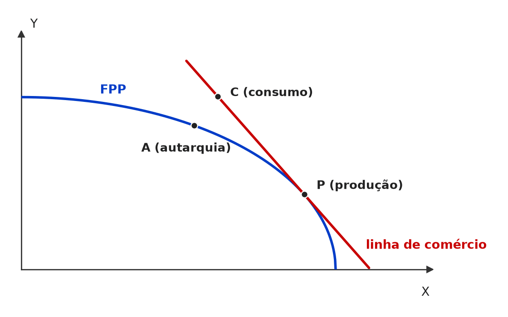
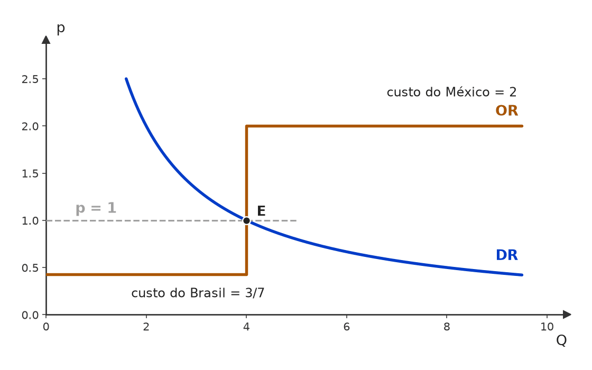
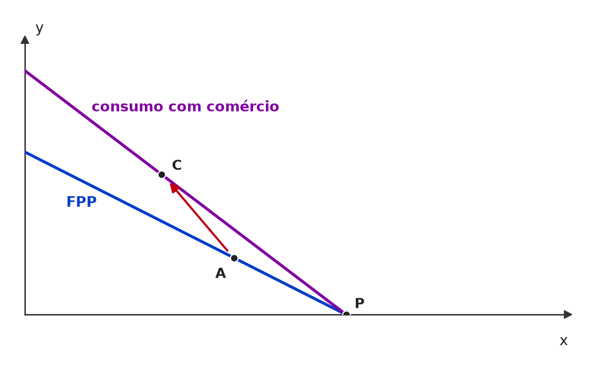
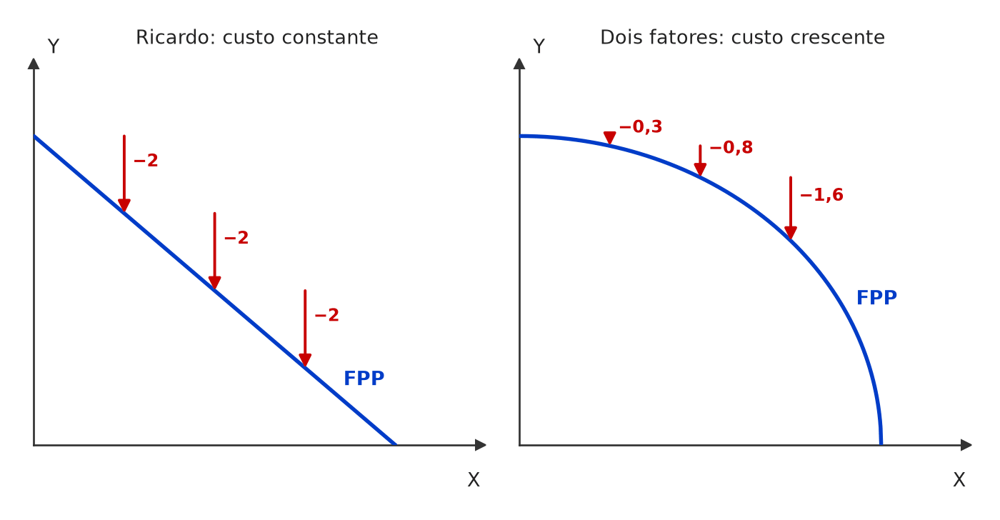
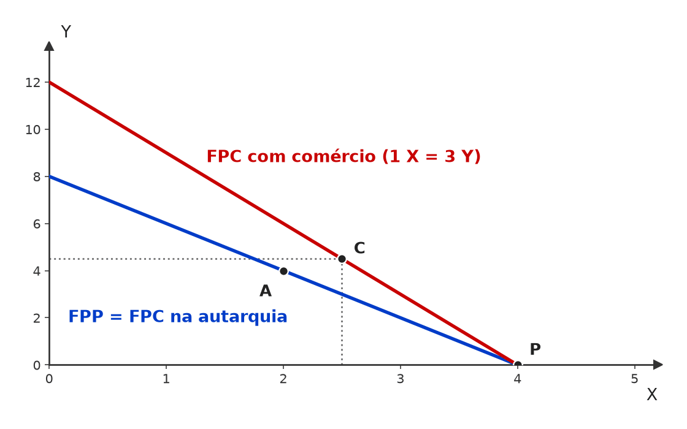
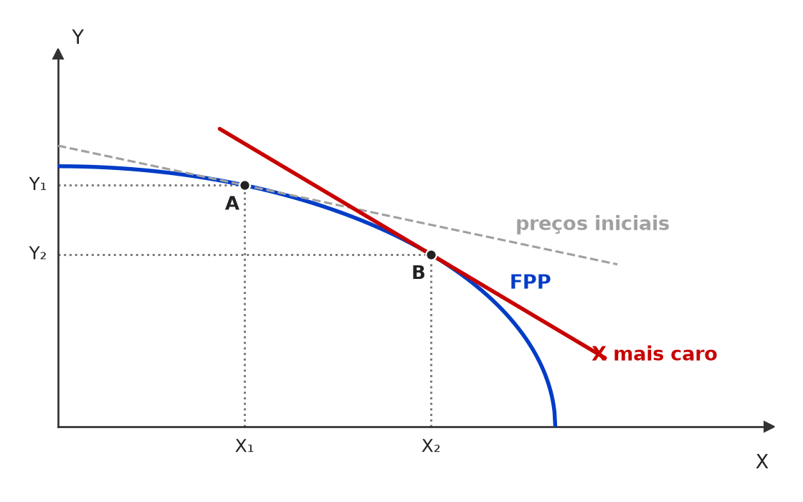
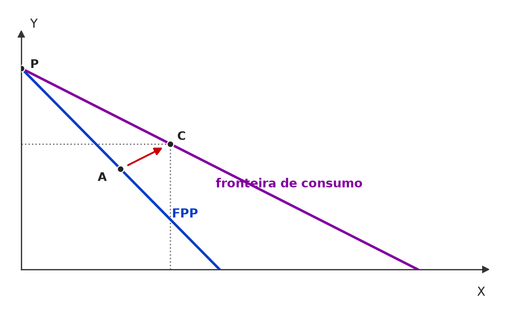
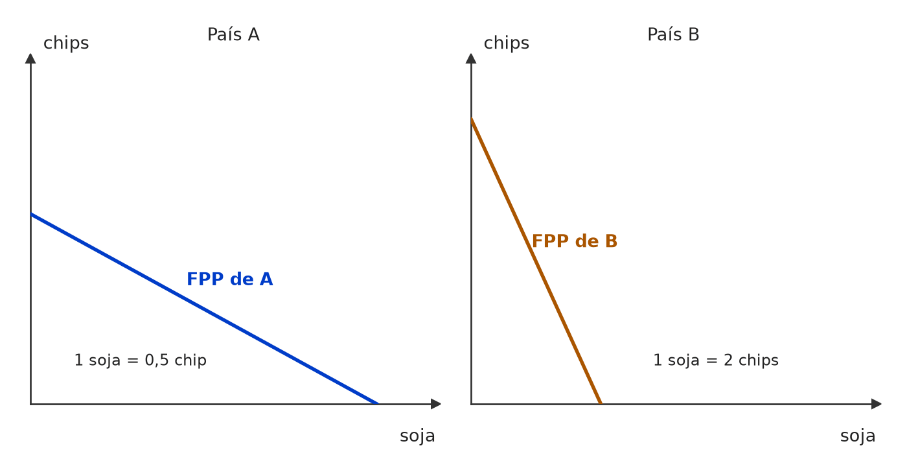
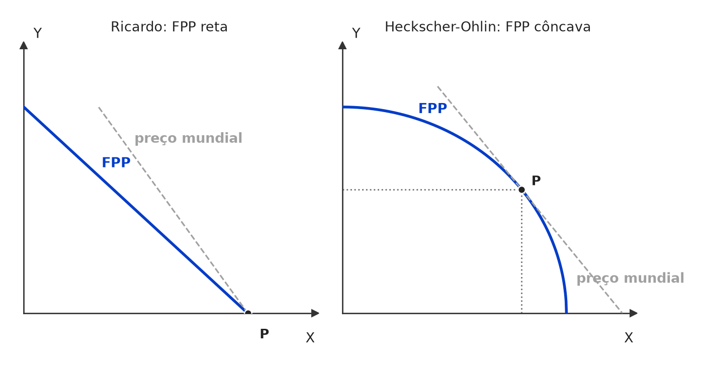
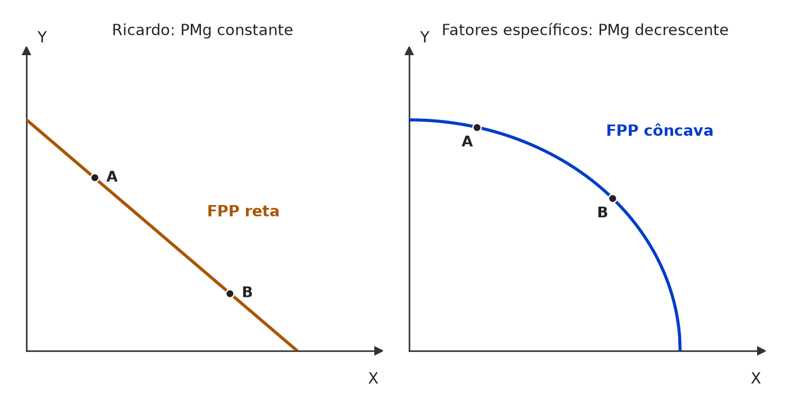

❌ [C/E - CEBRASPE › IRBr/CACD/2024 › Vantagens absolutas e comparativas]A partir da situação hipotética a seguir, considerando que a habilidade musical de um membro daquela banda possa ser medida pela sua contribuição ao ganho monetário em um show e que Carlos, guitarrista da mesma banda, poderia ser o baterista da banda, julgue (C ou E) o item seguinte, tendo como referência a teoria das vantagens comparativas. Um comentarista de rádio proferiu a seguinte frase a respeito do baterista de uma banda de rock: “O João não é o melhor baterista do mundo… sejamos sinceros, ele não é nem o melhor baterista da sua banda!”. Item: Carlos tem vantagem comparativa em ser guitarrista. | ✅ CERTO Carlos tem vantagem comparativa em ser guitarrista. 🎯 Em poucas palavras: Carlos é melhor que João na bateria (vantagem absoluta), mas tirá-lo da guitarra custaria muito à banda. Seu menor custo de oportunidade está na guitarra; o de João, na bateria. 📖 Destrinchando o tema:
🧐 Dissecando a redação do item: [contraintuitivo] O texto motivador sugere que Carlos é “melhor baterista”, e o candidato apressado conclui que ele deveria tocar bateria. A banca cobra exatamente a separação entre ser melhor (absoluta) e ter menor custo de oportunidade (comparativa). 😈 Para dificultar:
| |||||||||||||||
[C/E - CEBRASPE › IRBr/CACD/2024 › Vantagens absolutas e comparativas]A partir da situação hipotética a seguir, considerando que a habilidade musical de um membro daquela banda possa ser medida pela sua contribuição ao ganho monetário em um show e que Carlos, guitarrista da mesma banda, poderia ser o baterista da banda, julgue (C ou E) o item seguinte, tendo como referência a teoria das vantagens comparativas. Um comentarista de rádio proferiu a seguinte frase a respeito do baterista de uma banda de rock: “O João não é o melhor baterista do mundo… sejamos sinceros, ele não é nem o melhor baterista da sua banda!”. Item: João teria vantagem absoluta em ser guitarrista. | ❌ ERRADO João teria vantagem absoluta em ser guitarrista. 🎯 Em poucas palavras: Nada indica que João toque guitarra melhor que Carlos — que é o guitarrista e ainda toca bateria melhor que ele. Vantagem absoluta na guitarra, se alguém a tem, é de Carlos. 📖 Destrinchando o tema:
🧐 Dissecando a redação do item: [troca de ator · extrapolação] O item atribui a João uma vantagem que o enunciado não sustenta e que, pela lógica do caso, pertence a Carlos. Truque típico: trocar o personagem e o tipo de vantagem para ver se o candidato confunde os dois conceitos. 😈 Para dificultar:
✍️ Reescrita correta: João não teria vantagem absoluta em ser guitarrista: nada no enunciado o indica, e Carlos, o guitarrista, é melhor que ele até na bateria. | |||||||||||||||
[C/E - CEBRASPE › IRBr/CACD/2024 › Vantagens absolutas e comparativas]A partir da situação hipotética a seguir, considerando que a habilidade musical de um membro daquela banda possa ser medida pela sua contribuição ao ganho monetário em um show e que Carlos, guitarrista da mesma banda, poderia ser o baterista da banda, julgue (C ou E) o item seguinte, tendo como referência a teoria das vantagens comparativas. Um comentarista de rádio proferiu a seguinte frase a respeito do baterista de uma banda de rock: “O João não é o melhor baterista do mundo… sejamos sinceros, ele não é nem o melhor baterista da sua banda!”. Item: O custo de oportunidade relativo de João ser baterista é menor que o custo de oportunidade relativo de Carlos ser baterista. | ✅ CERTO O custo de oportunidade relativo de João ser baterista é menor que o custo de oportunidade relativo de Carlos ser baterista. 🎯 Em poucas palavras: Pôr Carlos na bateria faz a banda perder o guitarrista; manter João na bateria custa só a diferença de qualidade entre os dois bateristas. O custo de oportunidade de João é menor — daí sua vantagem comparativa na bateria. 📖 Destrinchando o tema:
🧐 Dissecando a redação do item: [literalidade · contraintuitivo] Reescreve a definição de vantagem comparativa com nomes trocados. O contraintuitivo é aceitar que o “pior” baterista tem o menor custo de oportunidade na bateria. 😈 Para dificultar:
| |||||||||||||||
[C/E - CEBRASPE › IRBr/CACD/2024 › Vantagens absolutas e comparativas]A partir da situação hipotética a seguir, considerando que a habilidade musical de um membro daquela banda possa ser medida pela sua contribuição ao ganho monetário em um show e que Carlos, guitarrista da mesma banda, poderia ser o baterista da banda, julgue (C ou E) o item seguinte, tendo como referência a teoria das vantagens comparativas. Um comentarista de rádio proferiu a seguinte frase a respeito do baterista de uma banda de rock: “O João não é o melhor baterista do mundo… sejamos sinceros, ele não é nem o melhor baterista da sua banda!”. Item: O custo de oportunidade relativo de João ser guitarrista é menor que o custo de custo de oportunidade relativo de Carlos ser guitarrista. | ⚪ ANULADO O custo de oportunidade relativo de João ser guitarrista é menor que o custo de custo de oportunidade relativo de Carlos ser guitarrista. 🎯 Em poucas palavras: Pelo conteúdo, seria ERRADO (Carlos tem o menor custo de oportunidade na guitarra), mas o erro de redação “custo de custo de oportunidade” tornou o item ambíguo e a banca o anulou. ⚠️ Gabarito contestável: Item anulado. O gabarito preliminar era ERRADO, coerente com o caso: na guitarra, o menor custo de oportunidade é o de Carlos, e o de João é maior (ele teria de deixar a bateria, sua única função útil, para render pouco na guitarra). A expressão duplicada impediu o julgamento objetivo. 🏛️ Justificativa da banca: Deferido com anulação. O emprego da expressão “o custo do custo de oportunidade” prejudicou o julgamento objetivo do item. 📖 Destrinchando o tema:
🧐 Dissecando a redação do item: [outro: erro material de redação · inversão] Pretendia-se testar a inversão do item sobre a bateria (trocando “baterista” por “guitarrista”, o “menor” fica falso). O erro de digitação gerou a anulação. 😈 Para dificultar:
| |||||||||||||||
[C/E - CEBRASPE › TJ/PA/2025 › Vantagens absolutas e comparativas]Acerca dos conceitos fundamentais de microeconomia, julgue o item que se segue. Item: O livre-comércio internacional pode expandir as possibilidades de consumo de um país para além de sua própria fronteira de possibilidades de produção. | ✅ CERTO O livre-comércio internacional pode expandir as possibilidades de consumo de um país para além de sua própria fronteira de possibilidades de produção. 🎯 Em poucas palavras: Com comércio, o país produz num ponto e consome em outro: especializa-se segundo a vantagem comparativa, troca ao preço mundial e alcança cestas de consumo fora da sua FPP. 📖 Destrinchando o tema:
📈 No gráfico:  Na autarquia, o país consome sobre a própria FPP (A). Com comércio, produz em P, troca ao preço mundial ao longo da linha de comércio e consome em C — mais dos dois bens que em A e fora da FPP. A FPP não se move: o que se amplia é o consumo. 🧐 Dissecando a redação do item: [modulador relativo · paráfrase fiel] Item de conceito, protegido pelo “pode”. O ponto delicado é a distinção consumo × produção: a frase fala em possibilidades de consumo indo além da fronteira de produção, que é exatamente o ganho do comércio. 😈 Para dificultar:
| |||||||||||||||
[C/E - IDEG – Prof. Bozan › Pré-TPS/2026 › Vantagens absolutas e comparativas]Sobre as teorias clássicas e neoclássicas de comércio, julgue o item a seguir. Item: O país tem vantagem comparativa na produção de um bem quando o custo de oportunidade deste bem em comparação com outro bem é menor do que o do outro país. | ✅ CERTO O país tem vantagem comparativa na produção de um bem quando o custo de oportunidade deste bem em comparação com outro bem é menor do que o do outro país. 🎯 Em poucas palavras: Definição ricardiana: vantagem comparativa = menor custo de oportunidade (quanto do outro bem se sacrifica para produzir uma unidade) em relação ao outro país. 📖 Destrinchando o tema:
🧐 Dissecando a redação do item: [literalidade] Definição de manual. A banca costuma errar o item trocando “custo de oportunidade” por “custo de produção” ou “horas de trabalho”, que levam à vantagem absoluta, ou invertendo para “maior”. 😈 Para dificultar:
| |||||||||||||||
[C/E - IDEG – Prof. Bozan › Pré-TPS/2026 › Vantagens absolutas e comparativas]Considere os postulados das teorias clássicas do comércio internacional e julgue a assertiva a seguir. Item: A teoria das vantagens absolutas de Adam Smith propõe que cada país deve se especializar em produzir e exportar o bem que pode ser produzido ao menor custo de trabalho, ou seja, onde a economia tenha a vantagem absoluta. | ✅ CERTO A teoria das vantagens absolutas de Adam Smith propõe que cada país deve se especializar em produzir e exportar o bem que pode ser produzido ao menor custo de trabalho, ou seja, onde a economia tenha a vantagem absoluta. 🎯 Em poucas palavras: Para Adam Smith (A Riqueza das Nações, 1776), cada país deve exportar o que produz com menos trabalho por unidade que os demais e importar o que os outros fazem mais barato. 📖 Destrinchando o tema:
🧐 Dissecando a redação do item: [literalidade] Definição de manual, coerente nas duas orações. A versão ERRADA clássica atribui a Smith o critério do custo de oportunidade ou diz que ele explicava o comércio mesmo sem vantagem absoluta. 😈 Para dificultar:
| |||||||||||||||
[C/E - IDEG – Prof. Bozan › Pré-TPS/2026 › Vantagens absolutas e comparativas]Considere os postulados das teorias clássicas do comércio internacional e julgue a assertiva a seguir. Item: Na teoria do comércio de David Ricardo, são as vantagens comparativas que determinam em que setor uma nação deve se especializar. Esta teoria baseia-se na eficiência relativa do fator trabalho e propõe que mesmo que um país não tenha vantagem absoluta em nenhum produto, pode beneficiar-se do comércio. | ✅ CERTO Na teoria do comércio de David Ricardo, são as vantagens comparativas que determinam em que setor uma nação deve se especializar. Esta teoria baseia-se na eficiência relativa do fator trabalho e propõe que mesmo que um país não tenha vantagem absoluta em nenhum produto, pode beneficiar-se do comércio. 🎯 Em poucas palavras: Resumo exato de Ricardo (1817): especialização pela vantagem comparativa, medida pela produtividade relativa do trabalho; o país sem vantagem absoluta alguma ainda ganha exportando o bem em que sua desvantagem é menor. 📖 Destrinchando o tema:
🧐 Dissecando a redação do item: [paráfrase fiel · contraintuitivo] Reúne a definição e a conclusão mais contraintuitiva de Ricardo (ganho sem vantagem absoluta). Marca ERRADO quem acha que “sem vantagem absoluta, não há o que exportar”. O “pode” mantém o item prudente. 😈 Para dificultar:
| |||||||||||||||
❌ [C/E - IDEG – Prof. Bozan › Pré-TPS/2026 › Vantagens absolutas e comparativas]Considere os postulados das teorias clássicas do comércio internacional e julgue a assertiva a seguir. Item: A teoria do valor trabalho propõe que o valor de um bem é determinado inteiramente pelo total de trabalho incorporado em sua produção, ignorando outros fatores como o capital e a inovação tecnológica. Esta abordagem explícita favorece a análise de produção em economias homogêneas, mas reconhece implicitamente que em contextos mais modernos e complexos, essa visão pode ser restringida e, portanto, integrada com percepções sobre a inovação tecnológica e capital. | ❌ ERRADO A teoria do valor trabalho propõe que o valor de um bem é determinado inteiramente pelo total de trabalho incorporado em sua produção, ignorando outros fatores como o capital e a inovação tecnológica. Esta abordagem explícita favorece a análise de produção em economias homogêneas, mas reconhece implicitamente que em contextos mais modernos e complexos, essa visão pode ser restringida e, portanto, integrada com percepções sobre a inovação tecnológica e capital. 🎯 Em poucas palavras: A teoria do valor-trabalho não ignora o capital: trata-o como trabalho pretérito incorporado nos meios de produção. E foi aplicada a economias capitalistas complexas; as críticas à sua insuficiência vieram de fora da tradição, com os marginalistas. 📖 Destrinchando o tema:
🧐 Dissecando a redação do item: [juízo indevido · extrapolação] Item prolixo, com aparência de síntese equilibrada. Atribui à teoria uma omissão que ela não tem (o capital é trabalho pretérito) e uma autocrítica “implícita” que nenhum clássico fez. Pista: “ignorando” e “reconhece implicitamente” são juízos sem base nos autores. 😈 Para dificultar:
✍️ Reescrita correta: A teoria do valor trabalho propõe que o valor de um bem é determinado inteiramente pelo total de trabalho incorporado em sua produção, tratando o capital como trabalho pretérito e a inovação tecnológica como redução do trabalho necessário. Esta abordagem explícita foi aplicada a economias capitalistas complexas, e as críticas à sua suficiência vieram sobretudo de fora da tradição clássica, com os marginalistas. | |||||||||||||||
[C/E - Nabuco › Vantagens absolutas e comparativas]Considere os coeficientes técnicos de produção de dois países, em horas de trabalho por unidade produzida, e suponha custos de transporte nulos. Com base na teoria das vantagens absolutas (Adam Smith) e comparativas (David Ricardo), julgue o item. Coeficientes técnicos de produção (horas de trabalho por unidade produzida)
Nabuco, 2026. Item: México detém vantagem absoluta na produção de ambos os bens. | ❌ ERRADO México detém vantagem absoluta na produção de ambos os bens. 🎯 Em poucas palavras: Vantagem absoluta = menos horas por unidade. O Brasil gasta menos nos dois bens: 1/7 < 1 (calçados) e 1/3 < 1/2 (vestuário). A vantagem absoluta em ambos é brasileira. 📖 Destrinchando o tema:
🧐 Dissecando a redação do item: [troca de ator] Troca o país detentor. Funciona com quem lê os números maiores do México (1 e 1/2) como “mais produção”, quando são mais horas. 🔥 Tabelas de coeficientes sempre testam a leitura horas × produtividade. 😈 Para dificultar:
✍️ Reescrita correta: Brasil detém vantagem absoluta na produção de ambos os bens. | |||||||||||||||
[C/E - Nabuco › Vantagens absolutas e comparativas]Considere os coeficientes técnicos de produção de dois países, em horas de trabalho por unidade produzida, e suponha custos de transporte nulos. Com base na teoria das vantagens absolutas (Adam Smith) e comparativas (David Ricardo), julgue o item. Coeficientes técnicos de produção (horas de trabalho por unidade produzida)
Nabuco, 2026. Item: Brasil detém vantagem comparativa em vestuário. | ❌ ERRADO Brasil detém vantagem comparativa em vestuário. 🎯 Em poucas palavras: Vantagem comparativa = menor custo de oportunidade. Em vestuário, ele é 7/3 de calçado no Brasil e 1/2 calçado no México: a vantagem é mexicana. O Brasil a tem em calçados. 📖 Destrinchando o tema:
🧐 Dissecando a redação do item: [troca de ator · troca de conceito] O item troca o país detentor e se apoia na confusão absoluta × comparativa: quem olha só as horas vê o Brasil “melhor em tudo” e marca CERTO. 🔥 Tabela de coeficientes com um país absolutamente superior nos dois bens é a montagem preferida da banca. 😈 Para dificultar:
✍️ Reescrita correta: México detém vantagem comparativa em vestuário. | |||||||||||||||
[C/E - Nabuco › Vantagens absolutas e comparativas]Considere os coeficientes técnicos de produção de dois países, em horas de trabalho por unidade produzida, e suponha custos de transporte nulos. Com base na teoria das vantagens absolutas (Adam Smith) e comparativas (David Ricardo), julgue o item. Coeficientes técnicos de produção (horas de trabalho por unidade produzida)
Nabuco, 2026. Item: Os dois países, caso pratiquem livre-comércio, terão ganhos recíprocos de comércio, se o preço relativo internacional for igual a 1. | ✅ CERTO Os dois países, caso pratiquem livre-comércio, terão ganhos recíprocos de comércio, se o preço relativo internacional for igual a 1. 🎯 Em poucas palavras: Há ganho mútuo quando os termos de troca ficam entre os custos de oportunidade dos dois países. Em calçados por vestuário: 3/7 < 1 < 2. Em vestuário por calçado: 1/2 < 1 < 7/3. Nas duas leituras, 1 está dentro. 📖 Destrinchando o tema:
📈 No gráfico:  Oferta (OR) e demanda (DR) relativas mundiais de calçados, com p = preço do calçado em unidades de vestuário. Abaixo de 3/7 (custo de oportunidade do Brasil) ninguém produz calçados; acima de 2 (custo do México) ninguém produz vestuário. Com p = 1, no trecho vertical, cada país se especializa no bem de sua vantagem comparativa e ambos ganham. 🧐 Dissecando a redação do item: [detalhe] O item não diz em que unidade está o preço relativo, mas 1 é o inverso de si mesmo: cai no intervalo nas duas leituras (calçado/vestuário ou vestuário/calçado). Se a banca desse 2,5 ou 0,4, a unidade passaria a importar. 😈 Para dificultar:
| |||||||||||||||
[C/E - Nabuco › Vantagens absolutas e comparativas]Considere os coeficientes técnicos de produção de dois países, em horas de trabalho por unidade produzida, e suponha custos de transporte nulos. Com base na teoria das vantagens absolutas (Adam Smith) e comparativas (David Ricardo), julgue o item. Coeficientes técnicos de produção (horas de trabalho por unidade produzida)
Nabuco, 2026. Item: Não há base para existir o comércio mutuamente vantajoso entre Brasil e México. | ❌ ERRADO Não há base para existir o comércio mutuamente vantajoso entre Brasil e México. 🎯 Em poucas palavras: A base do comércio vantajoso é a diferença de custos de oportunidade, não de vantagem absoluta. Como 3/7 ≠ 2 (custo do calçado no Brasil e no México), há espaço para especialização e ganho mútuo. 📖 Destrinchando o tema:
🧐 Dissecando a redação do item: [troca de conceito] O item condiciona o comércio à vantagem absoluta (Smith) e ignora a comparativa (Ricardo). Pista: quando a tabela mostra um país superior em tudo, a banca quase sempre testa se o candidato ainda enxerga o ganho comparativo. 😈 Para dificultar:
✍️ Reescrita correta: Há base para existir o comércio mutuamente vantajoso entre Brasil e México. | |||||||||||||||
[C/E - Nabuco › Vantagens absolutas e comparativas]A respeito das teorias do comércio, julgue o item subsequente. Item: No Modelo Ricardiano, a Fronteira de Possibilidade de Produção é côncava, existem dois fatores e pressupõe-se a lei dos rendimentos marginais decrescentes dos fatores. | ❌ ERRADO No Modelo Ricardiano, a Fronteira de Possibilidade de Produção é côncava, existem dois fatores e pressupõe-se a lei dos rendimentos marginais decrescentes dos fatores. 🎯 Em poucas palavras: O modelo ricardiano tem um único fator (trabalho) com produtividade constante. O custo de oportunidade é constante e a FPP é uma reta. O item descreve o modelo neoclássico (H-O). 📖 Destrinchando o tema:
🧐 Dissecando a redação do item: [troca de conceito] O item transplanta para Ricardo as três características do modelo neoclássico (FPP côncava, dois fatores, rendimentos decrescentes). Pista: “dois fatores” já denuncia H-O. 😈 Para dificultar:
✍️ Reescrita correta: No Modelo Ricardiano, a Fronteira de Possibilidade de Produção é linear, existe um único fator (trabalho) e pressupõe-se produtividade constante do trabalho. | |||||||||||||||
[C/E - Nabuco › Vantagens absolutas e comparativas]Em relação às teorias do comércio, julgue o item a seguir. Item: No Modelo Ricardiano, a mobilidade dos fatores de produção é assumida como perfeita entre os países. | ❌ ERRADO No Modelo Ricardiano, a mobilidade dos fatores de produção é assumida como perfeita entre os países. 🎯 Em poucas palavras: Em Ricardo, o trabalho é móvel entre setores dentro do país e imóvel entre países. É essa imobilidade que sustenta salários e custos diferentes e, portanto, a vantagem comparativa. 📖 Destrinchando o tema:
🧐 Dissecando a redação do item: [troca de conceito · inversão] Troca o âmbito da mobilidade: a perfeita é a interna; a internacional é nula. Pista: se os fatores se movessem livremente entre países, não haveria custos de oportunidade nacionais distintos a comparar. 😈 Para dificultar:
✍️ Reescrita correta: No Modelo Ricardiano, a mobilidade dos fatores de produção é assumida como perfeita entre setores dentro de cada país, mas nula entre os países. | |||||||||||||||
[C/E - Nabuco › Vantagens absolutas e comparativas]Em relação às teorias do comércio, julgue o item a seguir. Item: As teorias clássicas do comércio internacional baseiam-se nas diferenças tecnológicas que culminam em diferentes produtividades relativas da mão de obra, e a teoria neoclássica do comércio internacional, na diferença relativa de dotação dos fatores de produção. | ✅ CERTO As teorias clássicas do comércio internacional baseiam-se nas diferenças tecnológicas que culminam em diferentes produtividades relativas da mão de obra, e a teoria neoclássica do comércio internacional, na diferença relativa de dotação dos fatores de produção. 🎯 Em poucas palavras: É a divisão de manual: clássicos (Smith, Ricardo) → tecnologia e produtividade do trabalho; neoclássicos (Heckscher-Ohlin-Samuelson) → dotação relativa de fatores. 📖 Destrinchando o tema:
🧐 Dissecando a redação do item: [literalidade] Frase de manual reproduzida quase literalmente. O risco é a troca dos rótulos (clássica ↔ neoclássica), que é a versão ERRADA mais cobrada. 🔥 Mesmo item aparece em vários simulados, às vezes com “economias de escala” enxertadas no H-O. 😈 Para dificultar:
| |||||||||||||||
[C/E - Nabuco › Vantagens absolutas e comparativas]Em relação à economia internacional, julgue o item a seguir. Item: O livre-comércio internacional pode expandir as possibilidades de produção de um país para além de sua própria fronteira de possibilidades de consumo. | ❌ ERRADO O livre-comércio internacional pode expandir as possibilidades de produção de um país para além de sua própria fronteira de possibilidades de consumo. 🎯 Em poucas palavras: O comércio expande as possibilidades de consumo para além da FPP; a fronteira de produção, que depende de fatores e tecnologia, não se move. O item inverte os termos. 📖 Destrinchando o tema:
📈 No gráfico:  Especializado em x (ponto P) e trocando a 1x = 3y no mercado mundial, o país passa da autarquia (A) para o consumo em C, fora da FPP. A fronteira de produção não se moveu: o que se expandiu foi a fronteira de consumo. 🧐 Dissecando a redação do item: [inversão] Troca de lugar entre “produção” e “consumo”: a frase certa existe e é famosa, e o item a devolve com os termos permutados. O “pode” dá ar de moderação, mas não salva a inversão. Pista: “fronteira de possibilidades de consumo” não é o conceito usual; o nome consagrado é FPP. 😈 Para dificultar:
✍️ Reescrita correta: O livre-comércio internacional pode expandir as possibilidades de consumo de um país para além de sua própria fronteira de possibilidades de produção. | |||||||||||||||
[C/E - Nabuco › Vantagens absolutas e comparativas]Considerando as teorias clássicas e neoclássicas do comércio internacional, julgue o item a seguir. Item: A fronteira de possibilidades de produção (FPP) no modelo ricardiano é côncava, refletindo custos de oportunidade crescentes. | ❌ ERRADO A fronteira de possibilidades de produção (FPP) no modelo ricardiano é côncava, refletindo custos de oportunidade crescentes. 🎯 Em poucas palavras: Com um único fator (trabalho) e produtividade constante, a FPP ricardiana é uma reta: o custo de oportunidade é constante. A concavidade aparece em modelos com dois fatores, como o H-O. 📖 Destrinchando o tema:
📈 No gráfico:  À esquerda, a FPP ricardiana é uma reta: cada 2 unidades extras de X custam sempre 2 de Y (custo de oportunidade constante). À direita, a FPP côncava de modelos com dois fatores e rendimentos decrescentes: cada 2 unidades de X custam cada vez mais Y. 🧐 Dissecando a redação do item: [troca de conceito] O item cola no modelo ricardiano a FPP “padrão” dos livros de introdução, que é côncava. Pista: um fator só, com produtividade fixa, não tem como gerar custos crescentes. 🔥 A forma da FPP é a pergunta-relâmpago clássica sobre Ricardo. 😈 Para dificultar:
✍️ Reescrita correta: A fronteira de possibilidades de produção (FPP) no modelo ricardiano é linear, refletindo custos de oportunidade constantes. | |||||||||||||||
[C/E - Nabuco › Vantagens absolutas e comparativas]Considerando as teorias clássicas e neoclássicas do comércio internacional, julgue o item a seguir. Item: O Teorema de Heckscher-Ohlin assume tecnologias e preferências idênticas, enquanto o modelo Ricardiano explica o comércio internacional com base nas diferenças de tecnologia e produtividade do trabalho entre países com preferências idênticas. | ✅ CERTO O Teorema de Heckscher-Ohlin assume tecnologias e preferências idênticas, enquanto o modelo Ricardiano explica o comércio internacional com base nas diferenças de tecnologia e produtividade do trabalho entre países com preferências idênticas. 🎯 Em poucas palavras: Nos dois modelos as preferências são supostas iguais; o que muda é a fonte da vantagem: tecnologia em Ricardo, dotação de fatores em H-O. 📖 Destrinchando o tema:
🧐 Dissecando a redação do item: [paráfrase fiel] Item longo, com três afirmações empilhadas, todas corretas. O risco é desconfiar das “preferências idênticas” em Ricardo. 🔥 A versão ERRADA mais comum diz que em Ricardo “tecnologia e preferências diferem”. 😈 Para dificultar:
| |||||||||||||||
[C/E - Nidi/Jacqueline Bueno › Fevereiro/2026 › Vantagens absolutas e comparativas]No que se refere à economia internacional e suas teorias de comércio, julgue o item a seguir. Item: As teorias clássicas do comércio internacional baseiam-se na produtividade relativa da mão de obra, e a teoria neoclássica do comércio internacional, na diferença relativa de dotação dos fatores de produção. | ✅ CERTO As teorias clássicas do comércio internacional baseiam-se na produtividade relativa da mão de obra, e a teoria neoclássica do comércio internacional, na diferença relativa de dotação dos fatores de produção. 🎯 Em poucas palavras: Clássicos (Smith, Ricardo): comércio por diferenças de produtividade do trabalho. Neoclássicos (Heckscher-Ohlin): comércio por diferenças de dotação relativa de fatores, com tecnologia igual. 📖 Destrinchando o tema:
🧐 Dissecando a redação do item: [paráfrase fiel] Síntese correta das duas tradições, com o adjetivo “relativa” bem empregado nas duas metades. A armadilha usual seria inverter as bases (clássicos com dotação, neoclássicos com produtividade) ou trocar “relativa” por “absoluta” em Ricardo. 😈 Para dificultar:
| |||||||||||||||
[C/E - Clipping › Simuladão Julho/2025 › Vantagens absolutas e comparativas]Conflitos comerciais entre países, conhecidos como guerras comerciais, têm se tornado eventos recorrentes na economia global contemporânea. Geralmente caracterizadas pela imposição recíproca de tarifas, essas disputas afetam tanto o fluxo de bens quanto as expectativas dos agentes econômicos. Com base nesse contexto, julgue o item a seguir. Item: Do ponto de vista da teoria das vantagens comparativas, a guerra comercial representa uma realocação eficiente de recursos, pois força os países a se especializarem ainda mais naquilo que produzem com menor custo absoluto. | ❌ ERRADO Do ponto de vista da teoria das vantagens comparativas, a guerra comercial representa uma realocação eficiente de recursos, pois força os países a se especializarem ainda mais naquilo que produzem com menor custo absoluto. 🎯 Em poucas palavras: Tarifas recíprocas reduzem a especialização: cada país volta a produzir internamente o que importava mais barato. E a teoria ricardiana fala em custo de oportunidade (relativo), não absoluto. 📖 Destrinchando o tema:
🧐 Dissecando a redação do item: [inversão · troca de conceito] O item inverte o efeito da guerra comercial e, de quebra, troca o critério ricardiano (relativo) pelo smithiano (absoluto). Bastaria o “absoluto” para marcar ERRADO num item que abre com “vantagens comparativas”. 😈 Para dificultar:
✍️ Reescrita correta: Do ponto de vista da teoria das vantagens comparativas, a guerra comercial representa uma realocação ineficiente de recursos, pois reduz a especialização dos países naquilo que produzem com menor custo de oportunidade. | |||||||||||||||
[C/E - Nidi/Jacqueline Bueno › Simulado Julho/2025 › Vantagens absolutas e comparativas]O modelo de vantagens comparativas de David Ricardo é um dos principais modelos de teoria econômica e é amplamente utilizado para explicar relações de trocas em diferentes contextos. No que se refere a esse modelo, julgue (C ou E) o item a seguir. Item: No modelo ricardiano das vantagens comparativas, o papel desempenhado pelas economias de escala na produção é fundamental para o entendimento das razões do comércio entre países. | ❌ ERRADO No modelo ricardiano das vantagens comparativas, o papel desempenhado pelas economias de escala na produção é fundamental para o entendimento das razões do comércio entre países. 🎯 Em poucas palavras: O modelo ricardiano supõe rendimentos constantes de escala: o comércio nasce de diferenças de produtividade relativa do trabalho. Economias de escala são o motor das novas teorias do comércio. 📖 Destrinchando o tema:
🧐 Dissecando a redação do item: [anacronismo · troca de conceito] Atribui a um modelo de 1817 um mecanismo que só entrou na teoria do comércio no século XX. O “fundamental” agrava: escala não tem nenhum papel em Ricardo. 😈 Para dificultar:
✍️ Reescrita correta: No modelo ricardiano das vantagens comparativas, o papel desempenhado pelas diferenças de produtividade do trabalho na produção é fundamental para o entendimento das razões do comércio entre países. | |||||||||||||||
[C/E - Nidi/Jacqueline Bueno › Simulado Julho/2025 › Vantagens absolutas e comparativas]O modelo de vantagens comparativas de David Ricardo é um dos principais modelos de teoria econômica e é amplamente utilizado para explicar relações de trocas em diferentes contextos. No que se refere a esse modelo, julgue (C ou E) o item a seguir. Item: O modelo de comércio de David Ricardo descreve como é possível alcançar pontos acima e à direita na fronteira de possibilidades de consumo. | ✅ CERTO O modelo de comércio de David Ricardo descreve como é possível alcançar pontos acima e à direita na fronteira de possibilidades de consumo. 🎯 Em poucas palavras: Com especialização e troca, a fronteira de possibilidades de consumo (FPC) gira para fora a partir do ponto de especialização: o país alcança cestas acima e à direita da FPP, com mais dos dois bens. 📖 Destrinchando o tema:
📈 No gráfico:  Na autarquia, a FPP ricardiana (reta: 1 X custa 2 Y) é também a fronteira de consumo, e o país consome em A. Especializado em X (P) e trocando a 3 Y por X, consome sobre a nova FPC, que gira para fora a partir de P: C tem mais X e mais Y que A. 🧐 Dissecando a redação do item: [paráfrase fiel] A expressão “acima e à direita na fronteira de possibilidades de consumo” soa estranha, mas descreve a FPC com comércio situada além da FPP. O risco é ler “fronteira de possibilidades de produção” e marcar ERRADO por achar que o comércio expande a produção. 😈 Para dificultar:
| |||||||||||||||
❌ [C/E - Nidi/Jacqueline Bueno › Simulado Junho/2025 › Vantagens absolutas e comparativas]A globalização do espaço econômico torna o estudo da economia internacional cada vez mais relevante para o entendimento das relações de comércio entre as nações. A esse respeito, julgue como certo ou errado o item a seguir. Item: De acordo com o princípio das vantagens comparativas, a produção mundial total será maximizada se cada bem for produzido pelo país capaz de fazê-lo com os menores custos de oportunidade. | ✅ CERTO De acordo com o princípio das vantagens comparativas, a produção mundial total será maximizada se cada bem for produzido pelo país capaz de fazê-lo com os menores custos de oportunidade. 🎯 Em poucas palavras: É o núcleo do princípio de Ricardo: alocar cada bem ao país de menor custo de oportunidade economiza recursos e permite produzir mais de tudo com os mesmos fatores. 📖 Destrinchando o tema:
🧐 Dissecando a redação do item: [literalidade] Definição de manual. O “será” parece absoluto, mas, dentro das hipóteses do modelo, o resultado é exato. A armadilha seria trocar “custos de oportunidade” por “custos absolutos”, o que tornaria o item ERRADO. 😈 Para dificultar:
| |||||||||||||||
❌ [C/E - Nidi/Jacqueline Bueno › Simulado Junho/2025 › Vantagens absolutas e comparativas]A globalização do espaço econômico torna o estudo da economia internacional cada vez mais relevante para o entendimento das relações de comércio entre as nações. A esse respeito, julgue como certo ou errado o item a seguir. Item: O modelo clássico de comércio internacional, formulado no começo do século XIX, não era adequado à avaliação do comércio de serviços, que só se tornou relevante após a segunda guerra mundial. | ❌ ERRADO O modelo clássico de comércio internacional, formulado no começo do século XIX, não era adequado à avaliação do comércio de serviços, que só se tornou relevante após a segunda guerra mundial. 🎯 Em poucas palavras: A lógica ricardiana — especializar-se onde o custo de oportunidade é menor — vale para qualquer atividade transacionável, bens ou serviços. O modelo foi pensado com vinho e tecido, mas não se restringe a eles. 📖 Destrinchando o tema:
🧐 Dissecando a redação do item: [restrição indevida · nexo indevido] O item limita o alcance do modelo ao tipo de produto e amarra essa limitação a um dado histórico (“só após a segunda guerra”). A lógica do custo de oportunidade não depende de o produto ser tangível. 😈 Para dificultar:
✍️ Reescrita correta: O modelo clássico de comércio internacional, formulado no começo do século XIX, já era adequado à avaliação do comércio de serviços, que só se tornou relevante após a segunda guerra mundial. | |||||||||||||||
[C/E - Nabuco › Pré-TPS/2023 › Vantagens absolutas e comparativas]Suponha que dois países, A e B, produzam os bens x e y utilizando, para tanto, o fator trabalho como único insumo de produção. Considere as duas situações apresentadas na tabela e que o país A seja uma economia muito maior que o país B, de modo que a economia de B não consiga suprir o mercado mundial de nenhum dos produtos. A respeito do caso hipotético apresentado, julgue o item a seguir. [Tabela reconstruída: na fonte, os dados vinham numa imagem não preservada; valores deduzidos da resolução.] Unidades produzidas por unidade de trabalho
Tabela reconstruída a partir dos valores citados na resolução do item. Item: Na situação 1, mesmo que o país A seja absolutamente mais eficiente na produção de ambos os bens, haverá ganhos mútuos na troca entre os países. | ✅ CERTO Na situação 1, mesmo que o país A seja absolutamente mais eficiente na produção de ambos os bens, haverá ganhos mútuos na troca entre os países. 🎯 Em poucas palavras: Na situação 1 os custos de oportunidade diferem (1x = 2y em A; 1x = 6y em B): A tem vantagem comparativa em x e B em y, o que abre espaço para ganhos de troca, apesar da vantagem absoluta de A nos dois bens. ⚠️ Gabarito contestável: o CERTO segue a lição geral de Ricardo. Mas o próprio comando diz que B não consegue suprir o mercado mundial: A continua produzindo os dois bens, e o preço mundial fica no seu preço de autarquia (1x = 2y). Nesse caso, B fica com todo o ganho e o ganho de A é nulo (A não perde, mas também não ganha). A leitura mais defensável, à luz da premissa do país grande, seria ERRADO para “ganhos mútuos”; mantido o gabarito CERTO da fonte. 📖 Destrinchando o tema:
🧐 Dissecando a redação do item: [contraintuitivo · detalhe] O “mesmo que” convida a pensar que o país mais eficiente em tudo não precisaria comerciar: é a intuição que Ricardo derrubou. O ponto frágil é “mútuos”, que a premissa do país grande torna discutível. 😈 Para dificultar:
| |||||||||||||||
[C/E - Nabuco › Pré-TPS/2023 › Vantagens absolutas e comparativas]Suponha que dois países, A e B, produzam os bens x e y utilizando, para tanto, o fator trabalho como único insumo de produção. Considere as duas situações apresentadas na tabela e que o país A seja uma economia muito maior que o país B, de modo que a economia de B não consiga suprir o mercado mundial de nenhum dos produtos. A respeito do caso hipotético apresentado, julgue o item a seguir. [Tabela reconstruída: na fonte, os dados vinham numa imagem não preservada; valores deduzidos da resolução.] Unidades produzidas por unidade de trabalho
Tabela reconstruída a partir dos valores citados na resolução do item. Item: O país maior, devido a sua dimensão e seu poder econômico, terá todos os benefícios do comércio. | ❌ ERRADO O país maior, devido a sua dimensão e seu poder econômico, terá todos os benefícios do comércio. 🎯 Em poucas palavras: É o contrário: o país grande impõe seu preço de autarquia ao mercado mundial e não ganha nada; todo o ganho fica com o país pequeno, que troca a um preço muito diferente do seu. 📖 Destrinchando o tema:
🧐 Dissecando a redação do item: [inversão · juízo indevido] O item apela ao senso comum (“o mais forte leva tudo”) e atribui ao tamanho um poder de barganha que o modelo não tem. Pista: no modelo ricardiano, quem mais ganha é quem troca a preços mais distantes dos seus. 😈 Para dificultar:
✍️ Reescrita correta: O país maior, devido a sua dimensão e seu poder econômico, imporá ao mercado mundial o seu preço relativo de autarquia e não terá ganhos com o comércio, que ficarão todos com o país menor. | |||||||||||||||
[C/E - Nabuco › Pré-TPS/2023 › Vantagens absolutas e comparativas]Suponha que dois países, A e B, produzam os bens x e y utilizando, para tanto, o fator trabalho como único insumo de produção. Considere as duas situações apresentadas na tabela e que o país A seja uma economia muito maior que o país B, de modo que a economia de B não consiga suprir o mercado mundial de nenhum dos produtos. A respeito do caso hipotético apresentado, julgue o item a seguir. [Tabela reconstruída: na fonte, os dados vinham numa imagem não preservada; valores deduzidos da resolução.] Unidades produzidas por unidade de trabalho
Tabela reconstruída a partir dos valores citados na resolução do item. Item: Na situação 2, o país A possui vantagem comparativa na produção do bem x, enquanto o país B possui vantagem comparativa na produção do bem y. | ❌ ERRADO Na situação 2, o país A possui vantagem comparativa na produção do bem x, enquanto o país B possui vantagem comparativa na produção do bem y. 🎯 Em poucas palavras: Na situação 2, as produtividades de B são exatamente 1/4 das de A nos dois bens: o custo de oportunidade é 1x = 2y em ambos. Sem diferença, ninguém tem vantagem comparativa. 📖 Destrinchando o tema:
🧐 Dissecando a redação do item: [extrapolação · troca de conceito] O item transporta para a situação 2 o padrão de especialização que valia na situação 1. Pista: dividir as linhas da tabela (4/8 e 1/2) e perceber que as razões são iguais. 😈 Para dificultar:
✍️ Reescrita correta: Na situação 2, nenhum dos países possui vantagem comparativa, pois os custos de oportunidade são iguais (1x = 2y em A e em B). | |||||||||||||||
[C/E - Nabuco › Pré-TPS/2023 › Vantagens absolutas e comparativas]Suponha que dois países, A e B, produzam os bens x e y utilizando, para tanto, o fator trabalho como único insumo de produção. Considere as duas situações apresentadas na tabela e que o país A seja uma economia muito maior que o país B, de modo que a economia de B não consiga suprir o mercado mundial de nenhum dos produtos. A respeito do caso hipotético apresentado, julgue o item a seguir. [Tabela reconstruída: na fonte, os dados vinham numa imagem não preservada; valores deduzidos da resolução.] Unidades produzidas por unidade de trabalho
Tabela reconstruída a partir dos valores citados na resolução do item. Item: Na situação 2, não há bases em termos de vantagem comparativa para o comércio mutuamente benéfico. | ✅ CERTO Na situação 2, não há bases em termos de vantagem comparativa para o comércio mutuamente benéfico. 🎯 Em poucas palavras: Na situação 2, os custos de oportunidade são iguais (1x = 2y em A e em B): os preços de autarquia coincidem e não há termo de troca que melhore a situação de algum país. 📖 Destrinchando o tema:
🧐 Dissecando a redação do item: [literalidade · detalhe] Item de conta: basta comparar as razões x/y das duas linhas. O risco é marcar ERRADO por reflexo (“Ricardo diz que sempre há ganho”) ou confundir com a vantagem absoluta de A. 😈 Para dificultar:
| |||||||||||||||
[C/E - Prof. Rodrigo Teixeira › Intensivo Pré-TPS/2023 › Vantagens absolutas e comparativas]Acerca das teorias do comércio internacional, julgue o item a seguir. Item: As teorias clássicas do comércio internacional baseiam-se na produtividade relativa da mão de obra, e a teoria neoclássica do comércio internacional, na diferença relativa de dotação dos fatores de produção. | ✅ CERTO As teorias clássicas do comércio internacional baseiam-se na produtividade relativa da mão de obra, e a teoria neoclássica do comércio internacional, na diferença relativa de dotação dos fatores de produção. 🎯 Em poucas palavras: Correto: clássicos (Smith, Ricardo) → produtividade relativa do trabalho; neoclássicos (Heckscher-Ohlin) → dotação relativa de capital e trabalho. 📖 Destrinchando o tema:
🧐 Dissecando a redação do item: [literalidade] Versão enxuta da frase de manual. A armadilha seria uma troca de rótulos, que não ocorreu. 🔥 A mesma banca cobra a versão errada atribuindo a Smith e Ricardo a dotação de capital e trabalho. 😈 Para dificultar:
| |||||||||||||||
[C/E - Prof. Rodrigo Teixeira › Intensivo Pré-TPS/2023 › Vantagens absolutas e comparativas]Acerca das teorias do comércio internacional, julgue o item a seguir. Item: De acordo com o modelo ricardiano, as vantagens decorrentes do comércio internacional são afastadas na hipótese de um país ser relativamente menos produtivo do que outro em todas as indústrias. | ❌ ERRADO De acordo com o modelo ricardiano, as vantagens decorrentes do comércio internacional são afastadas na hipótese de um país ser relativamente menos produtivo do que outro em todas as indústrias. 🎯 Em poucas palavras: É a tese central de Ricardo: mesmo com desvantagem absoluta em tudo, o país ganha ao se especializar onde sua desvantagem é menor (sua vantagem comparativa). 📖 Destrinchando o tema:
🧐 Dissecando a redação do item: [contradição] O item afirma o oposto do teorema que cita. O “relativamente” confunde: se o país fosse menos produtivo em termos relativos em tudo, não haveria vantagem comparativa, mas isso é impossível com dois bens. A banca usa a palavra no sentido de “em comparação com o outro país”, isto é, desvantagem absoluta. 😈 Para dificultar:
✍️ Reescrita correta: De acordo com o modelo ricardiano, as vantagens decorrentes do comércio internacional não são afastadas na hipótese de um país ser relativamente menos produtivo do que outro em todas as indústrias. | |||||||||||||||
[C/E - Prof. Rodrigo Teixeira › Intensivo Pré-TPS/2023 › Vantagens absolutas e comparativas]A respeito das teorias do comércio internacional, julgue o item a seguir. Item: A teoria clássica de Smith e Ricardo defendia a especialização com base na dotação relativa dos fatores de produção capital e trabalho, que apresentariam rendimentos constantes. | ❌ ERRADO A teoria clássica de Smith e Ricardo defendia a especialização com base na dotação relativa dos fatores de produção capital e trabalho, que apresentariam rendimentos constantes. 🎯 Em poucas palavras: Smith e Ricardo baseavam a especialização na produtividade do trabalho (único fator). A dotação relativa de capital e trabalho é a base da teoria neoclássica de Heckscher-Ohlin. 📖 Destrinchando o tema:
🧐 Dissecando a redação do item: [troca de conceito · anacronismo] O item atribui aos clássicos a explicação neoclássica, formulada mais de um século depois. A cauda “rendimentos constantes” é verdadeira para os dois modelos e serve de isca. Pista: “capital e trabalho” como dupla de fatores = H-O. 😈 Para dificultar:
✍️ Reescrita correta: A teoria clássica de Smith e Ricardo defendia a especialização com base na produtividade relativa do trabalho, fator único que apresentaria rendimentos constantes. | |||||||||||||||
[C/E - Prof. Rodrigo Teixeira › Intensivo Pré-TPS/2023 › Vantagens absolutas e comparativas]A respeito das teorias do comércio internacional, julgue o item a seguir. Item: A teoria clássica de Smith e Ricardo defendia a especialização com base nas diferenças da produtividade do fator trabalho entre os países, o primeiro destacando as vantagens absolutas e o segundo as vantagens relativas. | ✅ CERTO A teoria clássica de Smith e Ricardo defendia a especialização com base nas diferenças da produtividade do fator trabalho entre os países, o primeiro destacando as vantagens absolutas e o segundo as vantagens relativas. 🎯 Em poucas palavras: Na teoria clássica, o comércio nasce de diferenças de produtividade do trabalho: Smith fala em vantagem absoluta; Ricardo, em vantagem comparativa (relativa). 📖 Destrinchando o tema:
🧐 Dissecando a redação do item: [paráfrase fiel] Item de definição: autor certo para cada vantagem e base certa (produtividade do trabalho). “Relativas” é sinônimo aceito de “comparativas”. A banca costuma errar o item trocando os autores ou atribuindo a Ricardo custos absolutos. 😈 Para dificultar:
| |||||||||||||||
[C/E - Prof. Rodrigo Teixeira › Intensivo Pré-TPS/2023 › Vantagens absolutas e comparativas]Julgue a afirmação abaixo acerca das teorias do comércio internacional. Item: No modelo ricardiano das vantagens comparativas, os países tenderão a concentrar-se na produção e exportação de bens cujos custos absolutos de produção sejam menores. | ❌ ERRADO No modelo ricardiano das vantagens comparativas, os países tenderão a concentrar-se na produção e exportação de bens cujos custos absolutos de produção sejam menores. 🎯 Em poucas palavras: Custo absoluto menor é a regra de Smith. Em Ricardo, o critério é o custo comparativo (de oportunidade): um país pode ter custos absolutos maiores em tudo e ainda exportar. 📖 Destrinchando o tema:
🧐 Dissecando a redação do item: [troca de conceito] Troca “comparativos” por “absolutos” dentro de uma frase que anuncia “vantagens comparativas” — a contradição interna é a pista. 🔥 Erro recorrente: atribuir a Ricardo o critério de Smith. 😈 Para dificultar:
✍️ Reescrita correta: No modelo ricardiano das vantagens comparativas, os países tenderão a concentrar-se na produção e exportação de bens cujos custos comparativos de produção sejam menores. | |||||||||||||||
[C/E - Prof. Daniel (Telegram Economia CACD) › Vantagens absolutas e comparativas]Julgue o item a seguir, relativo às teorias do comércio internacional. Item: A teoria das vantagens comparativas introduz a idéia de que, independente da eficiência absoluta, os países podem ganhar com o comércio internacional. Na prática, em um ambiente de livre comércio, são exportados os bens para os quais os países têm vantagem comparativa, em troca de bens para os quais os países são relativamente ineficientes na produção. | ✅ CERTO A teoria das vantagens comparativas introduz a idéia de que, independente da eficiência absoluta, os países podem ganhar com o comércio internacional. Na prática, em um ambiente de livre comércio, são exportados os bens para os quais os países têm vantagem comparativa, em troca de bens para os quais os países são relativamente ineficientes na produção. 🎯 Em poucas palavras: É a tese de Ricardo (1817): o que decide o comércio é o custo de oportunidade, não a produtividade absoluta. Até o país menos eficiente em tudo ganha ao exportar o bem em que sua desvantagem é menor. 📖 Destrinchando o tema:
🧐 Dissecando a redação do item: [paráfrase fiel] Paráfrase do princípio ricardiano, salvaguardada pelos termos “independente da eficiência absoluta” e “relativamente”. A banca costuma errar o item trocando “relativamente” por “absolutamente” ou dizendo que o país sem vantagem absoluta “não ganha” com o comércio. 😈 Para dificultar:
| |||||||||||||||
[C/E - Banca não identificada › Vantagens absolutas e comparativas]Acerca das teorias do comércio internacional, julgue o item a seguir. Item: O modelo de vantagens comparativas sustenta que todos os participantes do comércio internacional apresentam ganhos equivalentes ao participar do comércio. | ❌ ERRADO O modelo de vantagens comparativas sustenta que todos os participantes do comércio internacional apresentam ganhos equivalentes ao participar do comércio. 🎯 Em poucas palavras: O modelo garante que todos podem ganhar, mas não que ganhem o mesmo: a divisão dos ganhos depende dos termos de troca — quem negocia a um preço mais distante do seu custo de autarquia ganha mais. 📖 Destrinchando o tema:
🧐 Dissecando a redação do item: [extrapolação · modulador absoluto] “Todos ganham” é tese ricardiana; o examinador acrescentou “equivalentes”, que o modelo não sustenta. Desconfie de adjetivos de igualdade (iguais, equivalentes, proporcionais) colados a resultados de ganho mútuo. 😈 Para dificultar:
✍️ Reescrita correta: O modelo de vantagens comparativas sustenta que todos os participantes do comércio internacional apresentam ganhos — não necessariamente equivalentes, pois sua divisão depende dos termos de troca — ao participar do comércio. | |||||||||||||||
❌ [C/E - Banca não identificada › Vantagens absolutas e comparativas]Julgue o item a seguir, relativo às teorias do comércio internacional. Item: Para qualquer alteração nos preços relativos de dois bens, haverá mudança na composição da produção doméstica entre tais bens. | ✅ CERTO Para qualquer alteração nos preços relativos de dois bens, haverá mudança na composição da produção doméstica entre tais bens. 🎯 Em poucas palavras: Com FPP côncava (modelos neoclássicos), a economia produz onde a reta de preços relativos tangencia a fronteira. Qualquer mudança na inclinação dessa reta move o ponto de tangência e altera o mix de produção. ⚠️ Gabarito contestável: A fonte dá CERTO, e o item vale no arcabouço neoclássico (FPP côncava e lisa, produção diversificada). Mas o “qualquer” não resiste a dois casos de manual: na FPP reta de Ricardo, uma variação de preços que não cruze o custo de oportunidade interno mantém o país no mesmo ponto (especializado ou não); e uma economia já completamente especializada num canto da FPP côncava não reage a pequenas variações. Sem o modelo explicitado, ERRADO seria igualmente defensável. 📖 Destrinchando o tema:
📈 No gráfico:  Na FPP côncava, a economia produz onde a reta de preços relativos tangencia a fronteira. Quando X fica relativamente mais caro, a reta fica mais inclinada e a tangência desliza de A para B: mais X, menos Y. 🧐 Dissecando a redação do item: [contraintuitivo · detalhe] O “qualquer” soa como modulador absoluto e convida a marcar ERRADO. No modelo de FPP côncava, porém, ele é literal: a tangência reage a toda variação de preços. A pista é o modelo implícito (FPP côncava, produção diversificada); fora dele, o absoluto é o ponto fraco do item. 😈 Para dificultar:
| |||||||||||||||
[C/E - Banca não identificada › Vantagens absolutas e comparativas]Acerca das teorias do comércio internacional, julgue o item a seguir. Item: O modelo de vantagens comparativas de David Ricardo somente é capaz de explicar ganhos de comércio sob uma situação de especialização completa. | ❌ ERRADO O modelo de vantagens comparativas de David Ricardo somente é capaz de explicar ganhos de comércio sob uma situação de especialização completa. 🎯 Em poucas palavras: O modelo ricardiano admite ganhos de comércio sem especialização completa de ambos: no caso do país grande, este segue produzindo os dois bens, e o parceiro pequeno, que se especializa, colhe os ganhos. 📖 Destrinchando o tema:
🧐 Dissecando a redação do item: [restrição indevida] O “somente” transforma o resultado mais comum do modelo num requisito. 🔥 Itens com “somente”, “apenas” e “exclusivamente” sobre modelos teóricos tendem a ERRADO quando o manual traz um caso-limite. 😈 Para dificultar:
✍️ Reescrita correta: O modelo de vantagens comparativas de David Ricardo também é capaz de explicar ganhos de comércio fora de uma situação de especialização completa, como no caso do país grande. | |||||||||||||||
[C/E - Banca não identificada › Vantagens absolutas e comparativas]Acerca das teorias do comércio internacional, julgue o item a seguir. Item: O modelo de comércio de David Ricardo descreve como é possível alcançar pontos acima e à direita na fronteira de possibilidades de consumo. | ✅ CERTO O modelo de comércio de David Ricardo descreve como é possível alcançar pontos acima e à direita na fronteira de possibilidades de consumo. 🎯 Em poucas palavras: Com especialização e troca, o país passa a consumir sobre a fronteira de possibilidades de consumo (a linha de troca), que fica acima e à direita da sua FPP: mais dos dois bens do que conseguiria sozinho. 📖 Destrinchando o tema:
📈 No gráfico:  Sem comércio, o país consome sobre a própria FPP (A). Especializando-se em Y (P) e trocando ao preço internacional, passa a consumir sobre a fronteira de consumo, acima e à direita da FPP (C): mais X e mais Y do que em A. 🧐 Dissecando a redação do item: [paráfrase fiel · detalhe] A redação é truncada (“pontos acima e à direita na fronteira de possibilidades de consumo”), mas descreve o resultado gráfico clássico. Seria ERRADO se dissesse que o comércio permite produzir além da FPP. 😈 Para dificultar:
| |||||||||||||||
[C/E - Banca não identificada › Vantagens absolutas e comparativas]Acerca das teorias do comércio internacional, julgue o item a seguir. Item: Na teoria clássica de comércio, as vantagens comparativas são explicadas por funções de produção diferentes dos dois países. | ✅ CERTO Na teoria clássica de comércio, as vantagens comparativas são explicadas por funções de produção diferentes dos dois países. 🎯 Em poucas palavras: No modelo de Ricardo, a vantagem comparativa nasce de diferenças de tecnologia (produtividade do trabalho), isto é, de funções de produção distintas — e não de dotações de fatores, como no H-O. 📖 Destrinchando o tema:
📈 No gráfico:  Tecnologias diferentes geram FPPs com inclinações diferentes: em A, 1 t de soja custa 0,5 chip; em B, custa 2 chips. A tem vantagem comparativa em soja, e B, em chips. 🧐 Dissecando a redação do item: [literalidade] Item de definição. O risco é confundir com o H-O e pensar que “funções de produção iguais” é a hipótese clássica. Ricardo = tecnologia diferente; H-O = tecnologia igual, dotação diferente. 😈 Para dificultar:
| |||||||||||||||
[C/E - Banca não identificada › Vantagens absolutas e comparativas]Acerca das teorias do comércio internacional, julgue o item a seguir. Item: David Ricardo aperfeiçoou as ideias de Adam Smith e desenvolveu a chamada Teoria das Vantagens Comparativas. No livro Sobre os Princípios da Economia Política e da Tributação, Ricardo defende que o comércio internacional é benéfico a todos os países que mantêm vínculos comerciais entre si, pois o importante, segundo ele, são as vantagens comparativas, não as absolutas, de todos os fatores de produção de uma economia. | ❌ ERRADO David Ricardo aperfeiçoou as ideias de Adam Smith e desenvolveu a chamada Teoria das Vantagens Comparativas. No livro Sobre os Princípios da Economia Política e da Tributação, Ricardo defende que o comércio internacional é benéfico a todos os países que mantêm vínculos comerciais entre si, pois o importante, segundo ele, são as vantagens comparativas, não as absolutas, de todos os fatores de produção de uma economia. 🎯 Em poucas palavras: O modelo de Ricardo usa um único fator, o trabalho, e a vantagem comparativa se refere a bens (custo de oportunidade de produzi-los), não a “todos os fatores de produção”. 📖 Destrinchando o tema:
🧐 Dissecando a redação do item: [anacronismo · troca de conceito] Quatro afirmações verdadeiras abrem caminho para o erro no fim: “de todos os fatores de produção” enxerta em Ricardo um elemento neoclássico (H-O). Itens longos e corretos no começo costumam esconder o erro no complemento final. 😈 Para dificultar:
✍️ Reescrita correta: David Ricardo aperfeiçoou as ideias de Adam Smith e desenvolveu a chamada Teoria das Vantagens Comparativas. No livro Sobre os Princípios da Economia Política e da Tributação, Ricardo defende que o comércio internacional é benéfico a todos os países que mantêm vínculos comerciais entre si, pois o importante, segundo ele, são as vantagens comparativas, não as absolutas, na produção dos bens, medidas pela produtividade do trabalho, único fator de produção do modelo. | |||||||||||||||
[C/E - Banca não identificada › Vantagens absolutas e comparativas]Julgue o item a seguir, relativo às teorias do comércio internacional. Item: No modelo ricardiano das vantagens comparativas, os ganhos do comércio são explicados pelas diferenças da produtividade marginal relativa do fator trabalho entre os países. | ✅ CERTO No modelo ricardiano das vantagens comparativas, os ganhos do comércio são explicados pelas diferenças da produtividade marginal relativa do fator trabalho entre os países. 🎯 Em poucas palavras: Em Ricardo, o único fator é o trabalho, e o comércio nasce de diferenças na produtividade relativa (tecnologia) entre países. Como a produtividade é constante, a marginal coincide com a média. 📖 Destrinchando o tema:
🧐 Dissecando a redação do item: [detalhe] O “marginal” pode assustar, porque lembra modelos neoclássicos. Como a produtividade ricardiana é constante, marginal = média, e o item continua certo. O termo decisivo é “relativa”: se fosse “absoluta”, o item seria ERRADO. 😈 Para dificultar:
| |||||||||||||||
[C/E - Banca não identificada › Vantagens absolutas e comparativas]Acerca das teorias do comércio internacional, julgue o item a seguir. Item: As teorias clássicas do comércio internacional baseiam-se na produtividade relativa da mão de obra, e a teoria neoclássica do comércio internacional, na diferença relativa de dotação dos fatores de produção. | ✅ CERTO As teorias clássicas do comércio internacional baseiam-se na produtividade relativa da mão de obra, e a teoria neoclássica do comércio internacional, na diferença relativa de dotação dos fatores de produção. 🎯 Em poucas palavras: É a divisão de manual: clássicos (Smith, Ricardo) → produtividade do trabalho; neoclássicos (Heckscher, Ohlin, Samuelson) → dotações relativas de fatores. 📖 Destrinchando o tema:
🧐 Dissecando a redação do item: [literalidade] Item-síntese que só exige associar cada escola ao seu critério. A banca erra o item trocando os critérios entre as escolas ou falando em produtividade “absoluta” para Ricardo. 😈 Para dificultar:
| |||||||||||||||
[C/E - Banca não identificada › Vantagens absolutas e comparativas]Julgue o item a seguir, relativo às teorias do comércio internacional. Item: A ausência de barreiras, em prol da liberalização das trocas externas, promove, entre outros benefícios, o aumento da autossuficiência dos países no que concerne à disponibilidade de bens e serviços e a redução dos riscos associados às oscilações nas quantidades produzidas e nos preços praticados. | ❌ ERRADO A ausência de barreiras, em prol da liberalização das trocas externas, promove, entre outros benefícios, o aumento da autossuficiência dos países no que concerne à disponibilidade de bens e serviços e a redução dos riscos associados às oscilações nas quantidades produzidas e nos preços praticados. 🎯 Em poucas palavras: O livre-comércio leva à especialização, que é o contrário da autossuficiência: cada país passa a depender de importações e aumenta a interdependência, com maior exposição a choques de oferta e de preços externos. 📖 Destrinchando o tema:
🧐 Dissecando a redação do item: [inversão · meia-verdade] O item lista “benefícios” da abertura e enxerta o oposto do que ela produz (autossuficiência) e uma promessa de menor risco que a especialização não entrega. Pista: liberalizar é abrir mão de produzir tudo internamente. 😈 Para dificultar:
✍️ Reescrita correta: A ausência de barreiras, em prol da liberalização das trocas externas, promove, entre outros benefícios, a ampliação das opções dos países no que concerne à disponibilidade de bens e serviços, mas aprofunda a interdependência entre eles e a exposição aos riscos associados às oscilações nas quantidades produzidas e nos preços praticados. | |||||||||||||||
[C/E - Banca não identificada › Vantagens absolutas e comparativas]Julgue o item a seguir, relativo às teorias do comércio internacional. Item: Por elevar o custo de oportunidade do consumo, a especialização constitui uma das bases do comércio internacional, o que contradiz a lei das vantagens comparativas. | ❌ ERRADO Por elevar o custo de oportunidade do consumo, a especialização constitui uma das bases do comércio internacional, o que contradiz a lei das vantagens comparativas. 🎯 Em poucas palavras: A especialização segundo as vantagens comparativas reduz o custo de obter os bens e amplia as possibilidades de consumo; e ela não contradiz, mas decorre da lei das vantagens comparativas. 📖 Destrinchando o tema:
🧐 Dissecando a redação do item: [nexo indevido · contradição] Uma oração verdadeira (a especialização é base do comércio) entre duas falsas: uma causa inventada (elevar custo de oportunidade) e uma relação lógica invertida (“contradiz”). Pista: especialização e vantagem comparativa são faces da mesma tese ricardiana. 😈 Para dificultar:
✍️ Reescrita correta: Por ampliar as possibilidades de consumo, a especialização constitui uma das bases do comércio internacional, o que confirma a lei das vantagens comparativas. | |||||||||||||||
[C/E - Banca não identificada › Vantagens absolutas e comparativas]Acerca das teorias do comércio internacional, julgue o item a seguir. Item: De acordo com o princípio das vantagens comparativas, a produção mundial total será maximizada se cada bem for produzido pelo país capaz de fazê-lo com os menores custos. | ❌ ERRADO De acordo com o princípio das vantagens comparativas, a produção mundial total será maximizada se cada bem for produzido pelo país capaz de fazê-lo com os menores custos. 🎯 Em poucas palavras: “Menores custos” (absolutos) é o critério de Smith. Pelo princípio de Ricardo, cada bem deve ser produzido pelo país com o menor custo de oportunidade — mesmo que outro país o faça com menos recursos. 📖 Destrinchando o tema:
🧐 Dissecando a redação do item: [troca de conceito] O item cita o “princípio das vantagens comparativas” e entrega o critério das absolutas. Pista: “menores custos” sem “de oportunidade” ou “relativos”. 😈 Para dificultar:
✍️ Reescrita correta: De acordo com o princípio das vantagens comparativas, a produção mundial total será maximizada se cada bem for produzido pelo país capaz de fazê-lo com o menor custo de oportunidade. | |||||||||||||||
[C/E - Banca não identificada › Vantagens absolutas e comparativas]Acerca das teorias do comércio internacional, julgue o item a seguir. Item: O modelo clássico de comércio internacional, formulado no começo do século XIX, não pode ser aplicado ao comércio de serviços. | ❌ ERRADO O modelo clássico de comércio internacional, formulado no começo do século XIX, não pode ser aplicado ao comércio de serviços. 🎯 Em poucas palavras: A lógica do custo de oportunidade vale para qualquer coisa que se produza e se troque, inclusive serviços transacionáveis (transporte, seguros, software, turismo). O limite é a transacionabilidade, não o modelo. 📖 Destrinchando o tema:
🧐 Dissecando a redação do item: [restrição indevida · anacronismo] O item usa a data de formulação (“começo do século XIX”) para sugerir que o modelo ficou preso aos bens da época. A teoria é abstrata: vale para serviços transacionáveis. 😈 Para dificultar:
✍️ Reescrita correta: O modelo clássico de comércio internacional, formulado no começo do século XIX, também pode ser aplicado ao comércio de serviços transacionáveis. |
[C/E - CEBRASPE › IRBr/CACD/2025 › Heckscher-Ohlin e teoremas]Considerando a situação hipotética a seguir e as teorias neoclássicas do comércio internacional, que aperfeiçoaram a análise proposta pela teoria clássica, incluindo a possibilidade de incorporar múltiplos fatores de produção, julgue o item seguinte. O país A tem abundância de mão de obra, e o país B tem abundância de capital. A produção do bem X é mais intensiva em mão de obra, enquanto a produção do bem Y é mais intensiva em capital. Item: De acordo com o teorema de Samuelson-Stolper, uma política protecionista voltada à importação do bem Y no país B tende a aumentar a remuneração da mão de obra no país B. | ❌ ERRADO De acordo com o teorema de Samuelson-Stolper, uma política protecionista voltada à importação do bem Y no país B tende a aumentar a remuneração da mão de obra no país B. 🎯 Em poucas palavras: Proteger Y eleva o preço doméstico de Y, que é intensivo em capital. Pelo Stolper-Samuelson, sobe a remuneração real do capital e cai a do trabalho. 📖 Destrinchando o tema:
🧐 Dissecando a redação do item: [troca de conceito] O item aplica corretamente o nome do teorema e o instrumento (proteção eleva o preço de Y), mas troca o fator beneficiado. 🔥 O CACD gosta de cenários com A/B e X/Y: monte a tabela fator abundante → bem exportado → fator intensivo antes de julgar. 😈 Para dificultar:
✍️ Reescrita correta: De acordo com o teorema de Samuelson-Stolper, uma política protecionista voltada à importação do bem Y no país B tende a aumentar a remuneração do capital no país B e a reduzir a da mão de obra. |
[C/E - CEBRASPE › IRBr/CACD/2025 › Heckscher-Ohlin e teoremas]Considerando a situação hipotética a seguir e as teorias neoclássicas do comércio internacional, que aperfeiçoaram a análise proposta pela teoria clássica, incluindo a possibilidade de incorporar múltiplos fatores de produção, julgue o item seguinte. O país A tem abundância de mão de obra, e o país B tem abundância de capital. A produção do bem X é mais intensiva em mão de obra, enquanto a produção do bem Y é mais intensiva em capital. Item: Um resultado da aplicação do modelo de Hecksher-Ohlin, atendidos todos os seus pressupostos, é que o comércio exterior tende a aumentar a remuneração da mão de obra no país A. | ✅ CERTO Um resultado da aplicação do modelo de Hecksher-Ohlin, atendidos todos os seus pressupostos, é que o comércio exterior tende a aumentar a remuneração da mão de obra no país A. 🎯 Em poucas palavras: A é abundante em trabalho → exporta X, intensivo em trabalho → com o comércio, o preço relativo de X sobe em A → pelo Stolper-Samuelson, o salário real sobe. 📖 Destrinchando o tema:
🧐 Dissecando a redação do item: [literalidade · modulador relativo] Item direto, com duas proteções: “atendidos todos os seus pressupostos” e “tende a”. O risco é inverter o fator beneficiado ou o país. Note a grafia “Hecksher”, erro do próprio enunciado, que não muda o julgamento. 😈 Para dificultar:
|
[ME - FGV › Senado Federal/Consultor Legislativo/2022 › Heckscher-Ohlin e teoremas]Acerca das teorias neoclássicas de comércio internacional, resolva a questão a seguir. Questão: Assinale a opção que apresenta uma característica das teorias neoclássicas de comércio internacional. (A) As vantagens comparativas se originam de diferenças tecnológicas, culminando em diferenças de produtividade do trabalho. (B) Utilizam formulações tecnológicas lineares, sem diferenças intersetoriais de alocação e de distribuição de renda nos países. (C) Em cada país, os detentores dos fatores mais abundantes são menos beneficiados pela abertura comercial e pela especialização. (D) Em uma pequena economia aberta, as demandas por fatores são infinitamente elásticas. (E) Uma elevação do preço do bem intensivo em um determinado fator causa a elevação tanto do preço desse fator e como do preço do outro fator. | 🔵 Letra D ❌ (A) As vantagens comparativas se originam de diferenças tecnológicas, culminando em diferenças de produtividade do trabalho. ❌ (B) Utilizam formulações tecnológicas lineares, sem diferenças intersetoriais de alocação e de distribuição de renda nos países. ❌ (C) Em cada país, os detentores dos fatores mais abundantes são menos beneficiados pela abertura comercial e pela especialização. ✅ (D) Em uma pequena economia aberta, as demandas por fatores são infinitamente elásticas. ❌ (E) Uma elevação do preço do bem intensivo em um determinado fator causa a elevação tanto do preço desse fator e como do preço do outro fator. 🎯 Em poucas palavras: No H-O com produção diversificada, os preços dos fatores ficam presos aos preços dos bens, que o pequeno país toma do mercado mundial. Mudanças de dotação são absorvidas pela composição da produção, não pelos salários: é a insensibilidade dos preços dos fatores, ou demanda por fatores infinitamente elástica. 📖 Destrinchando o tema:
🧐 Dissecando a redação do item: [troca de conceito · inversão] Os distratores alternam confusão de escola (clássica × neoclássica em A e B) e inversão de teoremas (C e E). A correta é a menos intuitiva: quem não conhece a insensibilidade dos preços dos fatores elimina as outras quatro e chega a ela por exclusão. 😈 Para dificultar:
|
[C/E - Nidi/Jacqueline Bueno › Maio/2026 › Heckscher-Ohlin e teoremas]No que diz respeito à Teoria do Comércio Internacional, julgue certo ou errado (C ou E) o item a seguir. Item: A teoria neoclássica do comércio internacional, conhecida como Teorema de Hecksher-Ohlin, demonstra como a oferta relativa de fatores de produção e o emprego desses fatores em diferentes intensidades na produção explicam os padrões de especialização e as possibilidades do comércio internacional. | ✅ CERTO A teoria neoclássica do comércio internacional, conhecida como Teorema de Hecksher-Ohlin, demonstra como a oferta relativa de fatores de produção e o emprego desses fatores em diferentes intensidades na produção explicam os padrões de especialização e as possibilidades do comércio internacional. 🎯 Em poucas palavras: O H-O assenta-se em dois pilares: dotação relativa de fatores (abundância × escassez) e intensidade fatorial dos bens. Da combinação sai o padrão de comércio: exporta-se o bem intensivo no fator abundante. 📖 Destrinchando o tema:
🧐 Dissecando a redação do item: [literalidade] Definição de manual, com os dois pilares certos. A banca costuma errar o item trocando “dotação relativa” por “produtividade do trabalho” (que é Ricardo) ou “abundante” por “escasso” no padrão de exportação. 😈 Para dificultar:
|
[C/E - IDEG – Prof. Bozan › Pré-TPS/2026 › Heckscher-Ohlin e teoremas]Sobre as teorias clássicas e neoclássicas de comércio, julgue o item a seguir. Item: Segundo o modelo Heckscher-Ohlin (H-O), o comércio internacional ocorre devido à diferença entre a abundância relativa de recursos entre os países. | ✅ CERTO Segundo o modelo Heckscher-Ohlin (H-O), o comércio internacional ocorre devido à diferença entre a abundância relativa de recursos entre os países. 🎯 Em poucas palavras: É o núcleo do H-O: com tecnologia e preferências iguais, o que gera vantagem comparativa é a diferença de dotação relativa de fatores (K/L, terra/L) entre países. 📖 Destrinchando o tema:
🧐 Dissecando a redação do item: [paráfrase fiel] Reescreve o teorema com “recursos” no lugar de “fatores”. O risco está na palavra “relativa”: trocá-la por “absoluta” ou atribuir o comércio a diferenças tecnológicas tornaria o item ERRADO. 😈 Para dificultar:
|
[C/E - IDEG – Prof. Bozan › Pré-TPS/2026 › Heckscher-Ohlin e teoremas]Sobre as teorias clássicas e neoclássicas de comércio, julgue o item a seguir. Item: A equalização dos preços dos fatores não se manterá se os países tiverem tecnologias diferentes no modelo H-O. | ✅ CERTO A equalização dos preços dos fatores não se manterá se os países tiverem tecnologias diferentes no modelo H-O. 🎯 Em poucas palavras: O teorema da equalização dos preços dos fatores depende de tecnologia idêntica: só assim os mesmos preços de bens implicam os mesmos salários e aluguéis. Com técnicas diferentes, os preços dos fatores podem divergir mesmo com livre-comércio. 📖 Destrinchando o tema:
🧐 Dissecando a redação do item: [literalidade] Item de hipótese do teorema, com a negação na posição certa. A banca o tornaria ERRADO dizendo que a equalização “independe” da tecnologia ou que exige mobilidade internacional dos fatores (é o contrário: ocorre sem ela). 😈 Para dificultar:
|
[C/E - IDEG – Prof. Bozan › Pré-TPS/2026 › Heckscher-Ohlin e teoremas]Sobre as teorias clássicas e neoclássicas de comércio, julgue o item a seguir. Item: Segundo o modelo Hecksher – Ohlim – Samuelson, a utilização intensa do fator abundante aumenta a demanda do fator e eleva a remuneração do mesmo. | ✅ CERTO Segundo o modelo Hecksher – Ohlim – Samuelson, a utilização intensa do fator abundante aumenta a demanda do fator e eleva a remuneração do mesmo. 🎯 Em poucas palavras: Com a abertura, o país expande o setor intensivo no fator abundante; a demanda por esse fator sobe e, pelo teorema de Stolper-Samuelson, sua remuneração real aumenta (e a do fator escasso cai). 📖 Destrinchando o tema:
🧐 Dissecando a redação do item: [paráfrase fiel] Formulação informal (sem citar preços relativos) do resultado de Stolper-Samuelson. Os erros de grafia dos nomes não alteram o conteúdo. A banca o tornaria ERRADO trocando “abundante” por “escasso” ou dizendo que “ambos os fatores ganham”. 😈 Para dificultar:
|
❌ [C/E - IDEG – Prof. Bozan › Pré-TPS/2026 › Heckscher-Ohlin e teoremas]Considere os postulados das teorias clássicas do comércio internacional e julgue a assertiva a seguir. Item: O modelo de Heckscher-Ohlin sugere que uma economia deveria se especializar na produção de bens que fazem uso intensivo de seus fatores de produção mais abundantes. Porém, ele não considera variáveis como a tecnologia, o que o limita significativamente em contextos modernos e o impede de fundamentar modelos neoclássicos desenvolvidos posteriormente. | ❌ ERRADO O modelo de Heckscher-Ohlin sugere que uma economia deveria se especializar na produção de bens que fazem uso intensivo de seus fatores de produção mais abundantes. Porém, ele não considera variáveis como a tecnologia, o que o limita significativamente em contextos modernos e o impede de fundamentar modelos neoclássicos desenvolvidos posteriormente. 🎯 Em poucas palavras: A 1ª frase é o teorema H-O. O erro está na 2ª: o modelo não ignora a tecnologia (supõe-na idêntica entre países) e é justamente a base dos teoremas neoclássicos posteriores (Stolper-Samuelson, equalização, Rybczynski). 📖 Destrinchando o tema:
🧐 Dissecando a redação do item: [meia-verdade · inversão] A 1ª frase, correta, dá credibilidade; o “Porém” enxerta uma crítica com dois exageros: “não considera” (em vez de “supõe idêntica”) e “impede de fundamentar” (quando fundamentou). Pista: H-O e HOS são a mesma linhagem. 😈 Para dificultar:
✍️ Reescrita correta: O modelo de Heckscher-Ohlin sugere que uma economia deveria se especializar na produção de bens que fazem uso intensivo de seus fatores de produção mais abundantes. Porém, ele supõe tecnologia idêntica entre os países, o que o limita significativamente em contextos modernos, mas não o impediu de fundamentar modelos neoclássicos desenvolvidos posteriormente. |
[C/E - Armstrong › Pré-TPS/2026 › Heckscher-Ohlin e teoremas]Julgue o item a seguir, relativo às teorias do comércio internacional. Item: O Modelo Heckscher-Ohlin (H-O) pressupõe que as diferenças de produtividade do trabalho (tecnologia) entre os países são a principal causa do comércio internacional, prevendo que cada país exportará o bem em que sua mão de obra é relativamente mais produtiva. | ❌ ERRADO O Modelo Heckscher-Ohlin (H-O) pressupõe que as diferenças de produtividade do trabalho (tecnologia) entre os países são a principal causa do comércio internacional, prevendo que cada país exportará o bem em que sua mão de obra é relativamente mais produtiva. 🎯 Em poucas palavras: O item descreve o modelo ricardiano. O H-O supõe tecnologia idêntica e explica o comércio pela diferença de dotação relativa de fatores: cada país exporta o bem intensivo no fator relativamente abundante. 📖 Destrinchando o tema:
🧐 Dissecando a redação do item: [troca de conceito] O item atribui ao H-O a premissa e a previsão do modelo ricardiano, com linguagem técnica (“relativamente mais produtiva”) que soa correta. Pista: a palavra “tecnologia” entre parênteses denuncia Ricardo, já que o H-O a supõe igual. 😈 Para dificultar:
✍️ Reescrita correta: O Modelo Heckscher-Ohlin (H-O) pressupõe que as diferenças de dotação relativa de fatores entre os países são a principal causa do comércio internacional, prevendo que cada país exportará o bem intensivo em seu fator relativamente abundante. |
❌ [C/E - Armstrong › Pré-TPS/2026 › Heckscher-Ohlin e teoremas]Julgue o item a seguir, relativo às teorias do comércio internacional. Item: De acordo com o Teorema de Stolper-Samuelson, derivado do modelo Heckscher-Ohlin, a abertura comercial tende a aumentar a desigualdade de renda em países desenvolvidos (abundantes em capital/trabalho qualificado) e a reduzi-la em países em desenvolvimento (abundantes em trabalho não qualificado). | ✅ CERTO De acordo com o Teorema de Stolper-Samuelson, derivado do modelo Heckscher-Ohlin, a abertura comercial tende a aumentar a desigualdade de renda em países desenvolvidos (abundantes em capital/trabalho qualificado) e a reduzi-la em países em desenvolvimento (abundantes em trabalho não qualificado). 🎯 Em poucas palavras: O Stolper-Samuelson diz que a abertura favorece o fator abundante. No país rico, esse fator é capital ou qualificação (já no topo da distribuição): a desigualdade sobe. No país pobre, é o trabalho não qualificado (na base): a desigualdade cai. 📖 Destrinchando o tema:
🧐 Dissecando a redação do item: [modulador relativo] Item longo que aplica o teorema aos dois tipos de país. O “tende a” salva a proposição diante da evidência mista. Quem pensa na experiência latino-americana marca ERRADO, mas o item pergunta o que diz o teorema, não o que a empiria mostrou. 😈 Para dificultar:
🃏 Carta na manga:
|
[C/E - Nabuco › Heckscher-Ohlin e teoremas]A respeito das teorias do comércio, julgue o item subsequente. Item: No Modelo de Ricardo, a tecnologia difere entre os países, e as preferências dos consumidores entre os países são idênticas. Já o Modelo de Heckscher-Ohlin pressupõe a igualdade entre a tecnologia e a preferência dos consumidores entre os países. | ✅ CERTO No Modelo de Ricardo, a tecnologia difere entre os países, e as preferências dos consumidores entre os países são idênticas. Já o Modelo de Heckscher-Ohlin pressupõe a igualdade entre a tecnologia e a preferência dos consumidores entre os países. 🎯 Em poucas palavras: Ricardo: tecnologias diferentes (é a fonte da vantagem comparativa). H-O: tecnologias iguais e preferências iguais, para que só a dotação de fatores explique o comércio. 📖 Destrinchando o tema:
🧐 Dissecando a redação do item: [literalidade] Item de quadro comparativo de hipóteses, correto nos dois modelos. A versão ERRADA clássica inverte a tecnologia (igual em Ricardo, diferente no H-O) ou dá ao H-O preferências diferentes. 😈 Para dificultar:
|
[C/E - Nabuco › Heckscher-Ohlin e teoremas]Em relação às teorias do comércio, julgue o item a seguir. Item: O Modelo Heckscher-Ohlin assume que as tecnologias de produção são idênticas entre os países, diferentemente do Modelo Ricardiano. | ✅ CERTO O Modelo Heckscher-Ohlin assume que as tecnologias de produção são idênticas entre os países, diferentemente do Modelo Ricardiano. 🎯 Em poucas palavras: Em Heckscher-Ohlin a tecnologia é a mesma em todos os países e o comércio nasce da dotação relativa de fatores; em Ricardo, nasce justamente da diferença de tecnologia (produtividade do trabalho). 📖 Destrinchando o tema:
🧐 Dissecando a redação do item: [literalidade] Item de manual, sem pegadinha de modulador. O risco é inverter os modelos ou achar que “tecnologia idêntica” impediria o comércio. 🔥 A banca alterna a mesma frase com os papéis trocados (Ricardo com tecnologia igual) para gerar o ERRADO. 😈 Para dificultar:
|
[C/E - Nabuco › Heckscher-Ohlin e teoremas]Em relação às teorias do comércio, julgue o item a seguir. Item: O Teorema de Stolper-Samuelson descreve como mudanças nas dotações de fatores afetam as quantidades produzidas dos bens. | ❌ ERRADO O Teorema de Stolper-Samuelson descreve como mudanças nas dotações de fatores afetam as quantidades produzidas dos bens. 🎯 Em poucas palavras: Dotação → produção é o teorema de Rybczynski. Stolper-Samuelson liga outra dupla: preço dos bens → remuneração real dos fatores. 📖 Destrinchando o tema:
🧐 Dissecando a redação do item: [troca de conceito] A descrição é a definição exata de Rybczynski, com o nome trocado. Pista: Stolper-Samuelson sempre fala de remuneração (salário, renda do capital); quando o item fala em quantidades produzidas, o teorema é outro. 🧠 Mnemônico:
😈 Para dificultar:
✍️ Reescrita correta: O Teorema de Rybczynski descreve como mudanças nas dotações de fatores afetam as quantidades produzidas dos bens. |
[C/E - Nabuco › Heckscher-Ohlin e teoremas]Em relação às teorias do comércio, julgue o item a seguir. Item: A aplicação do Teorema de Stolper-Samuelson mostra que o retorno real do fator relativamente escasso de um país tende a aumentar com o livre comércio. | ❌ ERRADO A aplicação do Teorema de Stolper-Samuelson mostra que o retorno real do fator relativamente escasso de um país tende a aumentar com o livre comércio. 🎯 Em poucas palavras: Com o livre comércio, o fator abundante ganha e o escasso perde em termos reais: o retorno do escasso tende a cair. 📖 Destrinchando o tema:
🧐 Dissecando a redação do item: [inversão] O item inverte o sinal do efeito sobre o fator escasso. O “tende a” é só um modulador neutro; o erro está no verbo. 🔥 A banca alterna “escasso” e “abundante” e “aumentar” e “reduzir”: monte a cadeia preço do exportado ↑ → fator abundante ↑ antes de responder. 😈 Para dificultar:
✍️ Reescrita correta: A aplicação do Teorema de Stolper-Samuelson mostra que o retorno real do fator relativamente escasso de um país tende a diminuir com o livre comércio. |
[C/E - Nabuco › Heckscher-Ohlin e teoremas]Em relação às teorias do comércio, julgue o item a seguir. Item: No modelo de Heckscher-Ohlin de comércio internacional, as vantagens comparativas, que levam ao comércio entre dois países, decorrem de economias de escala na produção. | ❌ ERRADO No modelo de Heckscher-Ohlin de comércio internacional, as vantagens comparativas, que levam ao comércio entre dois países, decorrem de economias de escala na produção. 🎯 Em poucas palavras: O H-O supõe retornos constantes de escala; a vantagem comparativa vem das diferenças de dotação relativa de fatores. Economias de escala são o motor das novas teorias do comércio. 📖 Destrinchando o tema:
🧐 Dissecando a redação do item: [troca de conceito] O item mantém a moldura certa (H-O, vantagem comparativa) e troca só a fonte da vantagem por uma explicação de outra escola. Pista: “economias de escala” é incompatível com a hipótese de retornos constantes, que todo manual lista entre as premissas do H-O. 😈 Para dificultar:
✍️ Reescrita correta: No modelo de Heckscher-Ohlin de comércio internacional, as vantagens comparativas, que levam ao comércio entre dois países, decorrem de diferenças na dotação relativa de fatores de produção entre eles. |
[C/E - Nabuco › Heckscher-Ohlin e teoremas]Em relação às teorias do comércio, julgue o item a seguir. Item: Uma política de proteção tarifária sobre bens importados em um país relativamente escasso em trabalho, segundo a lógica do teorema de Stolper-Samuelson, levará a um aumento do preço relativo desses bens e, consequentemente, a uma redução da remuneração real do trabalho. | ❌ ERRADO Uma política de proteção tarifária sobre bens importados em um país relativamente escasso em trabalho, segundo a lógica do teorema de Stolper-Samuelson, levará a um aumento do preço relativo desses bens e, consequentemente, a uma redução da remuneração real do trabalho. 🎯 Em poucas palavras: País escasso em trabalho importa bens trabalho-intensivos. A tarifa encarece esses bens e, por Stolper-Samuelson, eleva o salário real; quem perde é o capital (fator abundante). 📖 Destrinchando o tema:
🧐 Dissecando a redação do item: [inversão] O raciocínio é montado corretamente até o último elo, e o sinal é invertido no fim. A armadilha é a intuição de que “proteção = perda geral”: no agregado sim, mas o fator escasso ganha. Pista: o bem protegido usa intensivamente o trabalho. 😈 Para dificultar:
✍️ Reescrita correta: Uma política de proteção tarifária sobre bens importados em um país relativamente escasso em trabalho, segundo a lógica do teorema de Stolper-Samuelson, levará a um aumento do preço relativo desses bens e, consequentemente, a um aumento da remuneração real do trabalho. |
[C/E - Nabuco › Heckscher-Ohlin e teoremas]Considerando as teorias clássicas e neoclássicas do comércio internacional, julgue o item a seguir. Item: De acordo com o Teorema de Stolper-Samuelson, a abertura comercial em um país abundante em trabalho e escasso em capital tende a reduzir o salário real e aumentar a remuneração real do capital. | ❌ ERRADO De acordo com o Teorema de Stolper-Samuelson, a abertura comercial em um país abundante em trabalho e escasso em capital tende a reduzir o salário real e aumentar a remuneração real do capital. 🎯 Em poucas palavras: O país abundante em trabalho exporta bens trabalho-intensivos; a abertura eleva seu preço relativo e, com ele, o salário real. O capital, escasso, perde. 📖 Destrinchando o tema:
🧐 Dissecando a redação do item: [inversão] Os dois sinais foram trocados ao mesmo tempo, o que mantém a frase internamente coerente e engana quem só confere a lógica. Pista: identifique o fator abundante (trabalho) e aplique “abundante ganha”. 😈 Para dificultar:
✍️ Reescrita correta: De acordo com o Teorema de Stolper-Samuelson, a abertura comercial em um país abundante em trabalho e escasso em capital tende a aumentar o salário real e reduzir a remuneração real do capital. |
[C/E - Nidi/Jacqueline Bueno › Simulado Abril/2025 › Heckscher-Ohlin e teoremas]Julgue o item a seguir, relativo à teoria do comércio internacional. Item: A teoria neoclássica do comércio internacional, conhecida como Teorema de Hecksher-Ohlin, demonstra como a oferta relativa de fatores de produção e o emprego desses fatores em diferentes intensidades na produção explicam os padrões de especialização e as possibilidades do comércio internacional. | ✅ CERTO A teoria neoclássica do comércio internacional, conhecida como Teorema de Hecksher-Ohlin, demonstra como a oferta relativa de fatores de produção e o emprego desses fatores em diferentes intensidades na produção explicam os padrões de especialização e as possibilidades do comércio internacional. 🎯 Em poucas palavras: O Heckscher-Ohlin combina dois ingredientes: abundância relativa de fatores (entre países) e intensidade fatorial (entre bens). Cada país exporta o bem intensivo no fator que tem em abundância. 📖 Destrinchando o tema:
🧐 Dissecando a redação do item: [paráfrase fiel] Definição correta, com os dois elementos exigidos. A grafia “Hecksher” (sem o c) está na fonte e não pesa no julgamento. Erro típico da banca nesse tema: atribuir ao H-O diferenças tecnológicas ou produtividade do trabalho. 😈 Para dificultar:
|
[C/E - Nidi/Jacqueline Bueno › Simulado Abril/2025 › Heckscher-Ohlin e teoremas]Julgue o item a seguir, relativo à teoria do comércio internacional. Item: Suponha que a produção de soja no Brasil seja intensiva em mão de obra e que o país imponha uma barreira tarifária sobre a soja americana, segundo o Teorema Stolper-Samuelson, a renda do fator trabalho no Brasil se reduz. | ❌ ERRADO Suponha que a produção de soja no Brasil seja intensiva em mão de obra e que o país imponha uma barreira tarifária sobre a soja americana, segundo o Teorema Stolper-Samuelson, a renda do fator trabalho no Brasil se reduz. 🎯 Em poucas palavras: A tarifa eleva o preço interno da soja; se a soja é trabalho-intensiva, pelo Stolper-Samuelson a remuneração real do trabalho sobe (e a do capital cai). 📖 Destrinchando o tema:
🧐 Dissecando a redação do item: [inversão] Premissas bem montadas e conclusão invertida. O “Suponha” sinaliza que não importa se a soja é de fato trabalho-intensiva: basta aplicar a regra. A pista é lembrar que tarifa = preço interno maior. 😈 Para dificultar:
✍️ Reescrita correta: Suponha que a produção de soja no Brasil seja intensiva em mão de obra e que o país imponha uma barreira tarifária sobre a soja americana, segundo o Teorema Stolper-Samuelson, a renda do fator trabalho no Brasil se eleva. |
[C/E - Nidi/Jacqueline Bueno › Simulado Março/2025 › Heckscher-Ohlin e teoremas]No que diz respeito à Teoria do Comércio Internacional, julgue certo ou errado (C ou E) o item a seguir. Item: A teoria neoclássica do comércio internacional, conhecida como Teorema de Hecksher-Ohlin, demonstra como a oferta relativa de fatores de produção e o emprego desses fatores em diferentes intensidades na produção explicam os padrões de especialização e as possibilidades do comércio internacional. | ✅ CERTO A teoria neoclássica do comércio internacional, conhecida como Teorema de Hecksher-Ohlin, demonstra como a oferta relativa de fatores de produção e o emprego desses fatores em diferentes intensidades na produção explicam os padrões de especialização e as possibilidades do comércio internacional. 🎯 Em poucas palavras: É a máxima do Heckscher-Ohlin: um país exporta os bens que usam intensivamente o fator que ele tem em abundância relativa e importa os que usam o fator escasso. 📖 Destrinchando o tema:
🧐 Dissecando a redação do item: [paráfrase fiel] A banca reaproveita esta mesma redação em mais de um simulado. Não há armadilha; o candidato erra quando desconfia de “demonstra” (forte, mas correto para um teorema dentro das suas hipóteses) ou confunde H-O com Ricardo. 😈 Para dificultar:
|
[C/E - Nidi/Jacqueline Bueno › Outubro/2024 › Heckscher-Ohlin e teoremas]A partir da interpretação das teorias clássicas de comércio, a abertura ao comércio internacional leva a um aumento do bem-estar social [...]. Considerando as diferentes estruturas de mercado e as interpretações das teorias de comércio mais modernas, avalie como certo ou errado (C ou E) o item a seguir. Item: Segundo o teorema de Stolper-Samuelson, a abertura comercial beneficia o fator de produção relativamente abundante em um país, aumentando sua remuneração, e pode prejudicar o fator relativamente escasso, o que implica em uma redistribuição dos ganhos do comércio entre os agentes econômicos. | ✅ CERTO Segundo o teorema de Stolper-Samuelson, a abertura comercial beneficia o fator de produção relativamente abundante em um país, aumentando sua remuneração, e pode prejudicar o fator relativamente escasso, o que implica em uma redistribuição dos ganhos do comércio entre os agentes econômicos. 🎯 Em poucas palavras: Com a abertura, sobe o preço do bem exportado (intensivo no fator abundante) e cai o do importado (intensivo no escasso): pelo Stolper-Samuelson, o abundante ganha e o escasso perde — conflito distributivo. 📖 Destrinchando o tema:
🧐 Dissecando a redação do item: [literalidade · modulador relativo] Definição exata do teorema, protegida pelo “pode”. A regência “implica em” é coloquial (a norma prefere “implica”), mas não altera o julgamento de conteúdo. 😈 Para dificultar:
🃏 Carta na manga:
|
❌ [C/E - Nidi/Jacqueline Bueno › Outubro/2024 › Heckscher-Ohlin e teoremas]A partir da interpretação das teorias clássicas de comércio, a abertura ao comércio internacional leva a um aumento do bem-estar social [...]. Considerando as diferentes estruturas de mercado e as interpretações das teorias de comércio mais modernas, avalie como certo ou errado (C ou E) o item a seguir. Item: No contexto de concorrência perfeita, o modelo de Heckscher-Ohlin prevê que os países tendem a exportar bens que utilizam intensivamente os fatores de produção nos quais são relativamente abundantes, resultando em uma completa equalização dos preços dos fatores de produção entre os países. | ❌ ERRADO No contexto de concorrência perfeita, o modelo de Heckscher-Ohlin prevê que os países tendem a exportar bens que utilizam intensivamente os fatores de produção nos quais são relativamente abundantes, resultando em uma completa equalização dos preços dos fatores de produção entre os países. 🎯 Em poucas palavras: A 1ª parte é o teorema de Heckscher-Ohlin. A “completa equalização” não decorre automaticamente dele: é outro resultado (teorema da equalização dos preços dos fatores, de Samuelson), que exige hipóteses adicionais muito restritivas. ⚠️ Gabarito contestável: no modelo canônico 2 × 2 × 2 de Heckscher-Ohlin-Samuelson (tecnologias idênticas, retornos constantes, sem custos de transporte nem tarifas, sem reversão de intensidade e com os dois países produzindo os dois bens), a equalização completa é resultado padrão, e muitos manuais a apresentam como previsão do modelo. O ERRADO se sustenta na leitura de que o item trata como consequência automática, “no contexto de concorrência perfeita”, um resultado que depende de várias outras hipóteses — e que Ohlin via apenas como tendência parcial. Numa prova CEBRASPE, a versão sem ressalvas tende a ser julgada ERRADA, mas a questão admitiria recurso. 📖 Destrinchando o tema:
🧐 Dissecando a redação do item: [extrapolação · modulador absoluto] A 1ª metade é literal e verdadeira; o erro foi enxertado no gerúndio “resultando em”, que transforma um resultado condicional em consequência necessária, reforçado por “completa”. Pista: “tendem a exportar” (cauteloso) contrasta com “completa equalização” (absoluto). 😈 Para dificultar:
✍️ Reescrita correta: No contexto de concorrência perfeita, o modelo de Heckscher-Ohlin prevê que os países tendem a exportar bens que utilizam intensivamente os fatores de produção nos quais são relativamente abundantes, o que tende a aproximar os preços dos fatores de produção entre os países, cuja equalização completa só ocorre sob as hipóteses restritivas do teorema de Samuelson. |
[C/E - Clipping › Simulado jul/2023 › Heckscher-Ohlin e teoremas]Julgue o item a seguir, relativo às teorias do comércio internacional. Item: De acordo com a teoria Heckscher-Ohlin, os países com uma abundância relativa de capital tendem a se especializar na produção de bens intensivos em trabalho, enquanto os países com uma abundância relativa de trabalho tendem a se especializar na produção de bens intensivos em capital. | ❌ ERRADO De acordo com a teoria Heckscher-Ohlin, os países com uma abundância relativa de capital tendem a se especializar na produção de bens intensivos em trabalho, enquanto os países com uma abundância relativa de trabalho tendem a se especializar na produção de bens intensivos em capital. 🎯 Em poucas palavras: Inversão dupla: no H-O, o país abundante em capital exporta bens intensivos em capital, e o abundante em trabalho exporta bens intensivos em trabalho. 📖 Destrinchando o tema:
🧐 Dissecando a redação do item: [inversão] As duas metades foram trocadas em espelho, o que mantém a frase simétrica e “bem construída”. Pista: o par abundância × intensidade tem de ser o mesmo fator dos dois lados (capital-capital, trabalho-trabalho). 😈 Para dificultar:
✍️ Reescrita correta: De acordo com a teoria Heckscher-Ohlin, os países com uma abundância relativa de capital tendem a se especializar na produção de bens intensivos em capital, enquanto os países com uma abundância relativa de trabalho tendem a se especializar na produção de bens intensivos em trabalho. |
[C/E - Nidi/Jacqueline Bueno › Simulado jul/2023 › Heckscher-Ohlin e teoremas]Julgue o item a seguir, relativo às teorias do comércio internacional. Item: Suponha que a produção de soja no Brasil seja intensiva em mão de obra e que o país imponha uma barreira tarifária sobre a soja americana, segundo o Teorema Stolper-Samuelson, a renda do fator trabalho no Brasil se reduz. | ❌ ERRADO Suponha que a produção de soja no Brasil seja intensiva em mão de obra e que o país imponha uma barreira tarifária sobre a soja americana, segundo o Teorema Stolper-Samuelson, a renda do fator trabalho no Brasil se reduz. 🎯 Em poucas palavras: A tarifa eleva o preço interno da soja; pelo teorema de Stolper-Samuelson, sobe a remuneração real do fator usado intensivamente nela (trabalho) e cai a do outro fator. 📖 Destrinchando o tema:
🧐 Dissecando a redação do item: [inversão] O item descreve o cenário correto e inverte só o efeito final. Pista: a tarifa protege o setor intensivo em trabalho, e quem ganha com a proteção é o fator usado nesse setor. 🔥 A banca também cobra a versão com o livre-comércio (beneficia o fator abundante). 😈 Para dificultar:
✍️ Reescrita correta: Suponha que a produção de soja no Brasil seja intensiva em mão de obra e que o país imponha uma barreira tarifária sobre a soja americana, segundo o Teorema Stolper-Samuelson, a renda do fator trabalho no Brasil aumenta. |
[C/E - Nabuco › Pré-TPS/2023 › Heckscher-Ohlin e teoremas]Em relação à microeconomia e à teoria do comércio internacional, julgue o item a seguir. Item: De acordo com a teoria das vantagens comparativas, nas versões de Heckscher-Ohlin e Samuelson, quando um país em desenvolvimento adota um programa radical de liberalização comercial, caracterizado pela redução linear de todas as tarifas de importação de mercadorias, o efeito será o aumento dos salários relativos nos setores produtores dos bens, que utilizam intensivamente o fator de produção escasso do país. | ❌ ERRADO De acordo com a teoria das vantagens comparativas, nas versões de Heckscher-Ohlin e Samuelson, quando um país em desenvolvimento adota um programa radical de liberalização comercial, caracterizado pela redução linear de todas as tarifas de importação de mercadorias, o efeito será o aumento dos salários relativos nos setores produtores dos bens, que utilizam intensivamente o fator de produção escasso do país. 🎯 Em poucas palavras: A liberalização encarece relativamente o bem exportado, intensivo no fator abundante, e eleva a remuneração desse fator. O fator escasso perde; e, com fatores móveis, não há salários diferentes por setor. 📖 Destrinchando o tema:
🧐 Dissecando a redação do item: [inversão · troca de conceito] O item embrulha a inversão (fator escasso ganharia) num enunciado longo e técnico (“redução linear de todas as tarifas”) e ainda fala em salário por setor, conceito estranho ao H-O. Pista: “escasso” ao lado de “aumento”. 😈 Para dificultar:
✍️ Reescrita correta: De acordo com a teoria das vantagens comparativas, nas versões de Heckscher-Ohlin e Samuelson, quando um país em desenvolvimento adota um programa radical de liberalização comercial, caracterizado pela redução linear de todas as tarifas de importação de mercadorias, o efeito será o aumento da remuneração real do fator de produção abundante do país, usado intensivamente nos bens exportados. |
[C/E - Nabuco › Pré-TPS/2023 › Heckscher-Ohlin e teoremas]Sobre teorias do comércio e macroeconomia aberta, julgue o item a seguir. Item: No modelo de Heckscher-Ohlin, pressupõe-se a igualdade entre a tecnologia e as preferências dos consumidores entre os países. Já no modelo de Ricardo a tecnologia e as preferências diferem entre os países. | ❌ ERRADO No modelo de Heckscher-Ohlin, pressupõe-se a igualdade entre a tecnologia e as preferências dos consumidores entre os países. Já no modelo de Ricardo a tecnologia e as preferências diferem entre os países. 🎯 Em poucas palavras: Em Ricardo só a tecnologia difere; as preferências são supostas idênticas, como no H-O. A primeira frase está certa; o erro está nas preferências da segunda. 📖 Destrinchando o tema:
🧐 Dissecando a redação do item: [meia-verdade] A primeira frase é perfeita e dá confiança; o erro foi enxertado na segunda com “e as preferências”. Pista: se as preferências também diferissem em Ricardo, haveria duas causas de comércio, e o modelo ricardiano é famoso por ter uma só. 😈 Para dificultar:
✍️ Reescrita correta: No modelo de Heckscher-Ohlin, pressupõe-se a igualdade entre a tecnologia e as preferências dos consumidores entre os países. Já no modelo de Ricardo a tecnologia difere entre os países, mas as preferências são idênticas. |
[C/E - Nabuco › Pré-TPS/2023 › Heckscher-Ohlin e teoremas]Sobre teorias do comércio e macroeconomia aberta, julgue o item a seguir. Item: Ambos os modelos Heckscher-Ohlin e Ricardiano assumem competição perfeita nos mercados de bens e de fatores, retornos constantes de escala e permitem explicar o comércio utilizando o conceito de vantagens comparativas. | ✅ CERTO Ambos os modelos Heckscher-Ohlin e Ricardiano assumem competição perfeita nos mercados de bens e de fatores, retornos constantes de escala e permitem explicar o comércio utilizando o conceito de vantagens comparativas. 🎯 Em poucas palavras: São as hipóteses comuns aos dois modelos “tradicionais”: concorrência perfeita, retornos constantes e comércio por vantagem comparativa. Muda só a fonte da vantagem. 📖 Destrinchando o tema:
🧐 Dissecando a redação do item: [literalidade] Lista de hipóteses comuns, sem modulador perigoso. O risco é achar que H-O teria retornos decrescentes de escala (confusão com rendimentos marginais decrescentes de cada fator, que de fato existem no H-O). 😈 Para dificultar:
|
[C/E - Nabuco › Pré-TPS/2023 › Heckscher-Ohlin e teoremas]Com relação às teorias do comércio internacional, julgue o item a seguir. Item: As teorias clássicas do comércio internacional baseiam-se nas diferenças tecnológicas que culminam em diferentes produtividades relativas da mão de obra, e a teoria neoclássica do comércio internacional, na diferença relativa de dotação dos fatores de produção. | ✅ CERTO As teorias clássicas do comércio internacional baseiam-se nas diferenças tecnológicas que culminam em diferentes produtividades relativas da mão de obra, e a teoria neoclássica do comércio internacional, na diferença relativa de dotação dos fatores de produção. 🎯 Em poucas palavras: Clássicos (Ricardo): vantagem por tecnologia (produtividade relativa do trabalho). Neoclássicos (Heckscher-Ohlin): vantagem por dotação relativa de fatores. 📖 Destrinchando o tema:
🧐 Dissecando a redação do item: [literalidade] Frase-padrão de manual. O perigo é a versão invertida (neoclássica = tecnologia), cobrada pela mesma banca em outros simulados. Pista: “mão de obra” como único fator → Ricardo. 😈 Para dificultar:
|
[C/E - Nabuco › Pré-TPS/2023 › Heckscher-Ohlin e teoremas]Com relação às teorias do comércio internacional, julgue o item a seguir. Item: No modelo de Heckscher-Ohlin de comércio internacional, as vantagens comparativas, que levam ao comércio entre dois países, decorrem de economias de escala na produção. | ❌ ERRADO No modelo de Heckscher-Ohlin de comércio internacional, as vantagens comparativas, que levam ao comércio entre dois países, decorrem de economias de escala na produção. 🎯 Em poucas palavras: No H-O, a vantagem comparativa decorre da dotação relativa de fatores, com retornos constantes. Economias de escala são outra explicação do comércio, independente da vantagem comparativa. 📖 Destrinchando o tema:
🧐 Dissecando a redação do item: [troca de conceito] Troca da fonte do comércio por uma de outra escola. Pista: “economias de escala” contradiz a hipótese de retornos constantes do H-O. 🔥 A mesma frase circula em vários simulados. 😈 Para dificultar:
✍️ Reescrita correta: No modelo de Heckscher-Ohlin de comércio internacional, as vantagens comparativas, que levam ao comércio entre dois países, decorrem de diferenças na dotação relativa de fatores de produção entre eles. |
[C/E - Prof. Rodrigo Teixeira › Intensivo Pré-TPS/2023 › Heckscher-Ohlin e teoremas]Acerca dos temas de economia internacional, julgue o item a seguir. Item: Sendo as vacinas um bem cuja produção usa intensivamente a tecnologia, espera-se que, com a pandemia e a elevação da demanda por vacinas, a remuneração relativa deste fator de produção diminua comparado aos demais fatores, no modelo Heckscher-Ohlin. | ❌ ERRADO Sendo as vacinas um bem cuja produção usa intensivamente a tecnologia, espera-se que, com a pandemia e a elevação da demanda por vacinas, a remuneração relativa deste fator de produção diminua comparado aos demais fatores, no modelo Heckscher-Ohlin. 🎯 Em poucas palavras: Demanda maior por vacinas → preço relativo das vacinas ↑ → pela lógica de Stolper-Samuelson, a remuneração do fator usado intensivamente nelas aumenta, não diminui. 📖 Destrinchando o tema:
🧐 Dissecando a redação do item: [inversão] Contexto atual (pandemia) e um fator pouco usual (“tecnologia”) para desviar a atenção de um mecanismo simples; o sinal da conclusão foi invertido. Pista: demanda ↑ por um bem nunca reduz a remuneração do fator que esse bem mais usa. 😈 Para dificultar:
✍️ Reescrita correta: Sendo as vacinas um bem cuja produção usa intensivamente a tecnologia, espera-se que, com a pandemia e a elevação da demanda por vacinas, a remuneração relativa deste fator de produção aumente comparado aos demais fatores, no modelo Heckscher-Ohlin. |
[C/E - Prof. Rodrigo Teixeira › Intensivo Pré-TPS/2023 › Heckscher-Ohlin e teoremas]Acerca das teorias do comércio internacional, julgue o item a seguir. Item: No modelo de Heckscher-Ohlin, o comércio internacional leva a um aumento do preço do fator de produção mais abundante relativamente ao preço do fator de produção menos abundante dentro de cada país. | ✅ CERTO No modelo de Heckscher-Ohlin, o comércio internacional leva a um aumento do preço do fator de produção mais abundante relativamente ao preço do fator de produção menos abundante dentro de cada país. 🎯 Em poucas palavras: É a implicação de Stolper-Samuelson: com comércio, cada país exporta o bem intensivo no fator abundante, e o preço relativo desse fator sobe. 📖 Destrinchando o tema:
🧐 Dissecando a redação do item: [literalidade] Enunciado correto do efeito distributivo do H-O. O risco é a intuição de que “o que é abundante fica mais barato”: isso vale em autarquia; o comércio faz justamente o contrário, valorizando o fator abundante. 😈 Para dificultar:
|
❌ [C/E - Prof. Rodrigo Teixeira › Intensivo Pré-TPS/2023 › Heckscher-Ohlin e teoremas]A respeito das teorias do comércio internacional, julgue o item a seguir. Item: Segundo o teorema de equalização dos preços dos fatores, havendo livre comércio dos bens finais, não é necessária a mobilidade internacional dos fatores de produção para que seus preços relativos se igualem entre os países. | ✅ CERTO Segundo o teorema de equalização dos preços dos fatores, havendo livre comércio dos bens finais, não é necessária a mobilidade internacional dos fatores de produção para que seus preços relativos se igualem entre os países. 🎯 Em poucas palavras: O comércio de bens funciona como comércio implícito de fatores: exportar bens trabalho-intensivos é exportar serviços de trabalho. Por isso os preços dos fatores convergem sem migração. 📖 Destrinchando o tema:
🧐 Dissecando a redação do item: [contraintuitivo] Parece que só a migração igualaria salários; o teorema diz que o comércio de bens basta. O “não é necessária” é a pegadinha: quem lê rápido entende “não ocorre sem mobilidade” e marca ERRADO. 😈 Para dificultar:
|
[C/E - Prof. Rodrigo Teixeira › Intensivo Pré-TPS/2023 › Heckscher-Ohlin e teoremas]A respeito das teorias do comércio internacional, julgue o item a seguir. Item: Segundo o teorema de Rybczynski, o aumento da dotação de um fator de produção levará à queda do preço relativo deste fator e consequente redução da produção do bem que usa intensivamente este fator. | ❌ ERRADO Segundo o teorema de Rybczynski, o aumento da dotação de um fator de produção levará à queda do preço relativo deste fator e consequente redução da produção do bem que usa intensivamente este fator. 🎯 Em poucas palavras: Rybczynski: a preços dos bens constantes, mais de um fator → aumento mais que proporcional da produção do bem intensivo nele e queda da do outro bem. Os preços dos fatores não mudam. 📖 Destrinchando o tema:
🧐 Dissecando a redação do item: [inversão · troca de conceito] Dois erros: o efeito sobre a produção foi invertido, e um efeito de preço que o teorema exclui foi acrescentado, com ar de “lei da oferta”. Pista: Rybczynski fala de quantidades a preços constantes. 😈 Para dificultar:
✍️ Reescrita correta: Segundo o teorema de Rybczynski, o aumento da dotação de um fator de produção levará a um aumento mais que proporcional da produção do bem que usa intensivamente este fator e à redução da produção do outro bem, mantidos constantes os preços dos bens. |
❌ [C/E - Prof. Rodrigo Teixeira › Intensivo Pré-TPS/2023 › Heckscher-Ohlin e teoremas]Sobre a teoria neoclássica do comércio internacional, julgue a afirmação a seguir. Item: Supondo que a produção de tecidos usa dois fatores, capital e trabalho, sendo intensiva neste último, o aumento no preço dos tecidos, tudo o mais constante, tende a elevar a remuneração do capital e reduzir a remuneração do trabalho, de acordo com o teorema de Stolper-Samuelson. | ❌ ERRADO Supondo que a produção de tecidos usa dois fatores, capital e trabalho, sendo intensiva neste último, o aumento no preço dos tecidos, tudo o mais constante, tende a elevar a remuneração do capital e reduzir a remuneração do trabalho, de acordo com o teorema de Stolper-Samuelson. 🎯 Em poucas palavras: Pelo teorema de Stolper-Samuelson, a alta do preço de um bem eleva a remuneração real do fator usado intensivamente nele (aqui, o trabalho) e reduz a do outro (o capital). O item inverteu os dois fatores. 📖 Destrinchando o tema:
🧐 Dissecando a redação do item: [inversão] Premissas e nome do teorema corretos; a conclusão troca o ganhador pelo perdedor. Pista: “intensiva neste último” amarra o tecido ao trabalho — é o trabalho que tem de ganhar. 🔥 Stolper-Samuelson é cobrado quase sempre por inversão de sentido. 😈 Para dificultar:
✍️ Reescrita correta: Supondo que a produção de tecidos usa dois fatores, capital e trabalho, sendo intensiva neste último, o aumento no preço dos tecidos, tudo o mais constante, tende a elevar a remuneração do trabalho e reduzir a remuneração do capital, de acordo com o teorema de Stolper-Samuelson. |
❌ [C/E - Prof. Rodrigo Teixeira › Intensivo Pré-TPS/2023 › Heckscher-Ohlin e teoremas]Sobre a teoria neoclássica do comércio internacional, julgue a afirmação a seguir. Item: O teorema da equalização dos preços dos fatores mostra que os proprietários de fatores de produção menos abundantes de um país terão ganhos com a abertura comercial. | ❌ ERRADO O teorema da equalização dos preços dos fatores mostra que os proprietários de fatores de produção menos abundantes de um país terão ganhos com a abertura comercial. 🎯 Em poucas palavras: Com a abertura, cada país exporta o bem intensivo no seu fator abundante: a demanda por esse fator sobe e a do fator escasso cai. Ganham os donos do fator abundante; perdem os do escasso. 📖 Destrinchando o tema:
🧐 Dissecando a redação do item: [inversão] O item troca “mais” por “menos” abundantes. A banca costuma pendurar a inversão num teorema vizinho (equalização em vez de Stolper-Samuelson) para distrair; o decisivo é o sentido: o fator escasso perde. 😈 Para dificultar:
✍️ Reescrita correta: O teorema da equalização dos preços dos fatores mostra que os proprietários de fatores de produção mais abundantes de um país terão ganhos com a abertura comercial. |
[C/E - Prof. Rodrigo Teixeira › Intensivo Pré-TPS/2023 › Heckscher-Ohlin e teoremas]Sobre a teoria neoclássica do comércio internacional, julgue a afirmação a seguir. Item: Uma economia aberta que produz 2 bens e encontra grandes reservas de um recurso natural, tende a aumentar mais que proporcionalmente a produção do bem que usa intensivamente este recurso e reduzir, em termos absolutos, a produção do outro bem, de acordo com o teorema de Rybczynski. | ✅ CERTO Uma economia aberta que produz 2 bens e encontra grandes reservas de um recurso natural, tende a aumentar mais que proporcionalmente a produção do bem que usa intensivamente este recurso e reduzir, em termos absolutos, a produção do outro bem, de acordo com o teorema de Rybczynski. 🎯 Em poucas palavras: É o enunciado do teorema de Rybczynski: a preços dos bens constantes, o aumento da dotação de um fator expande mais que proporcionalmente o bem intensivo nele e reduz em termos absolutos a produção do outro. 📖 Destrinchando o tema:
🧐 Dissecando a redação do item: [literalidade · contraintuitivo] Reproduz o enunciado do manual. Assusta porque parece paradoxal que uma economia com mais recursos produza menos de algum bem, e porque “mais que proporcionalmente” e “em termos absolutos” soam como exageros fabricados — aqui são exatamente o teorema. 😈 Para dificultar:
|
[C/E - Prof. Rodrigo Teixeira › Intensivo Pré-TPS/2023 › Heckscher-Ohlin e teoremas]Sobre os conceitos e teorias do comércio internacional, julgue a afirmação a seguir. Item: O teorema de Rybczynski não é compatível com o fenômeno conhecido como “doença holandesa” e a desindustrialização que se segue num país que descobre grandes reservas de recursos naturais. | ❌ ERRADO O teorema de Rybczynski não é compatível com o fenômeno conhecido como “doença holandesa” e a desindustrialização que se segue num país que descobre grandes reservas de recursos naturais. 🎯 Em poucas palavras: O teorema de Rybczynski é justamente uma das bases teóricas da doença holandesa: mais recurso natural expande o setor que o usa intensivamente e contrai, em termos absolutos, o outro setor (a indústria). 📖 Destrinchando o tema:
🧐 Dissecando a redação do item: [contradição] O item nega uma relação que os manuais afirmam. A versão CERTA, que a banca também cobra, diz que o teorema “é compatível” com a doença holandesa. Pista: a própria descrição do fenômeno no item (descoberta de recursos → desindustrialização) é a previsão do teorema. 😈 Para dificultar:
✍️ Reescrita correta: O teorema de Rybczynski é compatível com o fenômeno conhecido como “doença holandesa” e a desindustrialização que se segue num país que descobre grandes reservas de recursos naturais. |
[C/E - Prof. Rodrigo Teixeira › Intensivo Pré-TPS/2023 › Heckscher-Ohlin e teoremas]A respeito das teorias do comércio internacional, julgue o item a seguir. Item: Segundo o teorema de Stolper-Samuelson, o aumento no preço de um bem que usa intensivamente o trabalho, deverá levar à redução relativa da remuneração deste fator de produção. | ❌ ERRADO Segundo o teorema de Stolper-Samuelson, o aumento no preço de um bem que usa intensivamente o trabalho, deverá levar à redução relativa da remuneração deste fator de produção. 🎯 Em poucas palavras: Stolper-Samuelson: o preço do bem trabalho-intensivo sobe → a remuneração do trabalho sobe (mais que o preço) e a do capital cai. 📖 Destrinchando o tema:
🧐 Dissecando a redação do item: [inversão] Troca “aumento” por “redução” na conclusão. O “relativa” é ruído: mesmo em termos relativos (w/r), a remuneração do trabalho sobe. A vírgula entre sujeito e verbo (“…o trabalho, deverá…”) está na fonte e não afeta o julgamento. 😈 Para dificultar:
✍️ Reescrita correta: Segundo o teorema de Stolper-Samuelson, o aumento no preço de um bem que usa intensivamente o trabalho, deverá levar à elevação relativa da remuneração deste fator de produção. |
[C/E - Prof. Rodrigo Teixeira › Intensivo Pré-TPS/2023 › Heckscher-Ohlin e teoremas]A respeito das teorias do comércio internacional, julgue o item a seguir. Item: O modelo de Heckscher e Ohlin difere do modelo clássico de Ricardo, entre outras hipóteses, por considerar outros fatores de produção e não apenas o trabalho, de maneira que o padrão de comércio será definido pelas diferentes dotações relativas dos fatores de produção. | ✅ CERTO O modelo de Heckscher e Ohlin difere do modelo clássico de Ricardo, entre outras hipóteses, por considerar outros fatores de produção e não apenas o trabalho, de maneira que o padrão de comércio será definido pelas diferentes dotações relativas dos fatores de produção. 🎯 Em poucas palavras: Ricardo: um fator (trabalho) e tecnologias diferentes. Heckscher-Ohlin: dois ou mais fatores, tecnologia igual, e o comércio explicado pelas dotações relativas de fatores. 📖 Destrinchando o tema:
🧐 Dissecando a redação do item: [paráfrase fiel] Item de comparação entre modelos, sem armadilha: o “entre outras hipóteses” protege contra a acusação de reducionismo. O risco é o candidato achar que o H-O “também” se baseia em diferenças tecnológicas — não: supõe tecnologia idêntica. 😈 Para dificultar:
|
[C/E - Prof. Rodrigo Teixeira › Intensivo Pré-TPS/2023 › Heckscher-Ohlin e teoremas]Julgue a afirmação abaixo acerca das teorias do comércio internacional. Item: No modelo Heckscher-Ohlin a fronteira de possibilidades de produção é uma linha reta, levando à especialização completa. | ❌ ERRADO No modelo Heckscher-Ohlin a fronteira de possibilidades de produção é uma linha reta, levando à especialização completa. 🎯 Em poucas palavras: FPP reta e especialização completa são do modelo ricardiano. No Heckscher-Ohlin, a FPP é côncava (custo de oportunidade crescente) e a especialização é, em regra, incompleta. 📖 Destrinchando o tema:
📈 No gráfico:  À esquerda, Ricardo: FPP reta e preço mundial diferente do custo interno levam a produção ao canto (P, especialização completa). À direita, Heckscher-Ohlin: FPP côncava; a produção vai ao ponto de tangência com o preço mundial (P), onde o país ainda produz os dois bens (especialização incompleta). 🧐 Dissecando a redação do item: [troca de conceito] O item transplanta para o H-O duas características do modelo ricardiano (FPP reta e especialização completa). Como as duas são coerentes entre si, a frase “fecha” — o teste é perguntar: quantos fatores? Dois fatores com intensidades diferentes → curvatura. 😈 Para dificultar:
✍️ Reescrita correta: No modelo Heckscher-Ohlin a fronteira de possibilidades de produção é côncava, levando à especialização incompleta. |
[C/E - Prof. Rodrigo Teixeira › Intensivo Pré-TPS/2023 › Heckscher-Ohlin e teoremas]Sobre os conceitos e teorias do comércio internacional, julgue a afirmação a seguir. Item: O teorema de Rybczynski, que relaciona o aumento da dotação de um fator com o aumento da produção absoluta do bem que utiliza este fator intensivamente e redução da produção do outro bem, é compatível com o fenômeno conhecido como “doença holandesa” e a desindustrialização que se segue num país que descobre grandes reservas de recursos naturais. | ✅ CERTO O teorema de Rybczynski, que relaciona o aumento da dotação de um fator com o aumento da produção absoluta do bem que utiliza este fator intensivamente e redução da produção do outro bem, é compatível com o fenômeno conhecido como “doença holandesa” e a desindustrialização que se segue num país que descobre grandes reservas de recursos naturais. 🎯 Em poucas palavras: Descobrir recursos naturais = aumentar a dotação desse fator. Pelo Rybczynski, o setor extrativo cresce e a indústria encolhe — exatamente o efeito-deslocamento de recursos da doença holandesa. 📖 Destrinchando o tema:
🧐 Dissecando a redação do item: [paráfrase fiel] Versão correta de um item que a banca também cobra negado (“não é compatível” → ERRADO). O item é longo, mas cada pedaço confere com o teorema; a dúvida comum é achar que a doença holandesa é “só cambial” e, portanto, alheia ao modelo. 😈 Para dificultar:
|
[C/E - Nabuco › Heckscher-Ohlin e teoremas]Com relação às teorias do desenvolvimento e do comércio, julgue o item a seguir. Item: Nas teorias neoclássicas de comércio internacional, as vantagens comparativas se originam de diferenças tecnológicas, culminando em diferenças de produtividade do trabalho. | ❌ ERRADO Nas teorias neoclássicas de comércio internacional, as vantagens comparativas se originam de diferenças tecnológicas, culminando em diferenças de produtividade do trabalho. 🎯 Em poucas palavras: Diferença de tecnologia e de produtividade do trabalho é a fonte clássica (Ricardo). Na teoria neoclássica (H-O-S), a vantagem vem das dotações relativas de fatores, com tecnologia igual. 📖 Destrinchando o tema:
🧐 Dissecando a redação do item: [troca de conceito] O item pega a definição certa da teoria clássica e a cola no rótulo “neoclássicas”. Pista: “produtividade do trabalho” pressupõe um só fator, o que já denuncia Ricardo. 🔥 A mesma frase com “clássicas” é CERTO. 😈 Para dificultar:
✍️ Reescrita correta: Nas teorias neoclássicas de comércio internacional, as vantagens comparativas se originam de diferenças na dotação relativa de fatores de produção entre os países. |
[C/E - Nabuco › Heckscher-Ohlin e teoremas]Com relação às teorias do desenvolvimento e do comércio, julgue o item a seguir. Item: No modelo de Heckscher-Ohlin, múltiplos fatores de produção podem deslocar-se entre os setores e entre os países. | ❌ ERRADO No modelo de Heckscher-Ohlin, múltiplos fatores de produção podem deslocar-se entre os setores e entre os países. 🎯 Em poucas palavras: No H-O, os fatores são móveis entre setores dentro de cada país, mas imóveis entre países: o que cruza a fronteira são os bens. 📖 Destrinchando o tema:
🧐 Dissecando a redação do item: [meia-verdade] A primeira metade (entre os setores) é verdadeira; o erro foi acrescentado com um simples “e entre os países”. Pista: se os fatores cruzassem fronteiras, as dotações se igualariam e o próprio motivo do comércio no H-O sumiria. 😈 Para dificultar:
✍️ Reescrita correta: No modelo de Heckscher-Ohlin, múltiplos fatores de produção podem deslocar-se entre os setores, mas não entre os países. |
[C/E - Banca não identificada › Heckscher-Ohlin e teoremas]Julgue o item a seguir, relativo às teorias do comércio internacional. Item: A Fronteira de Possibilidade de produção no modelo de fatores específicos é representada por uma linha reta, uma vez que a produtividade marginal do trabalho é decrescente e constante. | ❌ ERRADO A Fronteira de Possibilidade de produção no modelo de fatores específicos é representada por uma linha reta, uma vez que a produtividade marginal do trabalho é decrescente e constante. 🎯 Em poucas palavras: No modelo de fatores específicos, a produtividade marginal do trabalho é decrescente em cada setor; por isso o custo de oportunidade cresce e a FPP é côncava. FPP reta é a do modelo ricardiano. E “decrescente e constante” se contradiz. 📖 Destrinchando o tema:
📈 No gráfico:  Com um só fator e produtividade constante (Ricardo), cada unidade a mais de X custa sempre o mesmo de Y: a FPP é reta. Com fatores específicos e produtividade marginal do trabalho decrescente, cada unidade a mais de X custa cada vez mais Y: a FPP é côncava. 🧐 Dissecando a redação do item: [troca de conceito · contradição] O item cola na FPP de fatores específicos o formato da FPP ricardiana e tenta justificá-lo com duas propriedades incompatíveis. Pista: “decrescente” já basta para afastar a reta. 🔥 A banca costuma cobrar o formato da FPP como marca de cada modelo de comércio. 😈 Para dificultar:
✍️ Reescrita correta: A Fronteira de Possibilidade de produção no modelo de fatores específicos é representada por uma curva côncava, uma vez que a produtividade marginal do trabalho é decrescente |
[C/E - Banca não identificada › Heckscher-Ohlin e teoremas]Julgue o item a seguir, relativo às teorias do comércio internacional. Item: De acordo com o modelo de Hecksher-Ohlin, uma economia tende a se especializar na produção do bem cuja função de produção seja intensiva no fator de produção escasso no país. | ❌ ERRADO De acordo com o modelo de Hecksher-Ohlin, uma economia tende a se especializar na produção do bem cuja função de produção seja intensiva no fator de produção escasso no país. 🎯 Em poucas palavras: O teorema de Heckscher-Ohlin diz o contrário: o país exporta (e se especializa relativamente) no bem intensivo no fator relativamente abundante, que é o fator relativamente barato antes do comércio. 📖 Destrinchando o tema:
🧐 Dissecando a redação do item: [inversão] Troca de uma palavra só: “escasso” no lugar de “abundante”. Tudo o mais reproduz o teorema, o que induz à leitura apressada. 🔥 É a inversão mais cobrada do tema, ao lado de trocar “abundante” por “produtivo” (que é Ricardo). 😈 Para dificultar:
✍️ Reescrita correta: De acordo com o modelo de Hecksher-Ohlin, uma economia tende a se especializar na produção do bem cuja função de produção seja intensiva no fator de produção abundante no país. |
❌ [C/E - Banca não identificada › Heckscher-Ohlin e teoremas]Julgue o item a seguir, relativo às teorias do comércio internacional. Item: A hipótese de tecnologia semelhante entre países, adotada pelo modelo tradicional de dotação relativa de fatores de Heckscher-Ohlin, não é compatível com um cenário em que a tecnologia seja considerada um bem público. | ❌ ERRADO A hipótese de tecnologia semelhante entre países, adotada pelo modelo tradicional de dotação relativa de fatores de Heckscher-Ohlin, não é compatível com um cenário em que a tecnologia seja considerada um bem público. 🎯 Em poucas palavras: Se a tecnologia é bem público (não rival e não excludente), todos os países têm acesso a ela: é justamente o que justifica supor funções de produção idênticas no H-O. As duas ideias são compatíveis. 📖 Destrinchando o tema:
🧐 Dissecando a redação do item: [inversão] O item nega uma relação que, na verdade, é de reforço. Quem associa “bem público” a algo que “atrapalha o mercado” marca CERTO. Pista: pergunte o que a premissa exige (todos com a mesma técnica) e o que o bem público garante (todos podem usar). 😈 Para dificultar:
✍️ Reescrita correta: A hipótese de tecnologia semelhante entre países, adotada pelo modelo tradicional de dotação relativa de fatores de Heckscher-Ohlin, é compatível com um cenário em que a tecnologia seja considerada um bem público. |
[C/E - Banca não identificada › Heckscher-Ohlin e teoremas]Julgue o item a seguir, relativo às teorias do comércio internacional. Item: Em um modelo de dotação relativa de fatores em que os fatores modelados sejam o trabalho qualificado e o não qualificado, o aumento salarial provocado por uma intensa demanda relativa por trabalho não qualificado e associado a baixos níveis de produtividade poderia explicar a chamada armadilha da renda média em países relativamente abundantes em trabalho não qualificado. | ✅ CERTO Em um modelo de dotação relativa de fatores em que os fatores modelados sejam o trabalho qualificado e o não qualificado, o aumento salarial provocado por uma intensa demanda relativa por trabalho não qualificado e associado a baixos níveis de produtividade poderia explicar a chamada armadilha da renda média em países relativamente abundantes em trabalho não qualificado. 🎯 Em poucas palavras: O país cresce exportando bens intensivos em trabalho não qualificado; a demanda por esse fator eleva os salários sem que a produtividade acompanhe. Ele perde competitividade para países mais baratos sem ter qualificação para competir nos setores sofisticados: a armadilha da renda média. 📖 Destrinchando o tema:
🧐 Dissecando a redação do item: [modulador relativo] O item é longo e técnico, mas a construção é prudente: “poderia explicar”. Para errá-lo, a banca precisaria afirmar que o mecanismo “explica necessariamente” a armadilha ou trocar o fator (qualificado × não qualificado). 😈 Para dificultar:
|
[C/E - Banca não identificada › Heckscher-Ohlin e teoremas]Acerca das teorias do comércio internacional, julgue o item a seguir. Item: Segundo a teoria neoclássica do comércio internacional, também conhecida como Teorema de Hecksher-Ohlin, o comércio internacional resulta de dotações distintas dos fatores de produção entre os países, e a vantagem comparativa é determinada pela escassez relativa desses fatores. | ✅ CERTO Segundo a teoria neoclássica do comércio internacional, também conhecida como Teorema de Hecksher-Ohlin, o comércio internacional resulta de dotações distintas dos fatores de produção entre os países, e a vantagem comparativa é determinada pela escassez relativa desses fatores. 🎯 Em poucas palavras: No H-O, a vantagem comparativa vem das dotações relativas: cada fator é barato onde é abundante e caro onde é escasso. Escassez e abundância relativas são as duas faces do mesmo critério. 📖 Destrinchando o tema:
🧐 Dissecando a redação do item: [paráfrase fiel · detalhe] O item usa “escassez relativa” onde o manual costuma dizer “abundância relativa”, e isso assusta. Mas a dotação relativa é um só critério: o que é abundante num país é escasso no outro. Erraria se dissesse que o país exporta o bem intensivo no fator escasso. 😈 Para dificultar:
|
[C/E - Banca não identificada › Heckscher-Ohlin e teoremas]Acerca das teorias do comércio internacional, julgue o item a seguir. Item: Segundo uma vertente da teoria neoclássica de comércio internacional, conhecida como Teorema Heckscher-Ohlin-Samuelson, a eliminação das barreiras ao comércio entre dois países resulta na convergência dos preços de seus fatores de produção. | ✅ CERTO Segundo uma vertente da teoria neoclássica de comércio internacional, conhecida como Teorema Heckscher-Ohlin-Samuelson, a eliminação das barreiras ao comércio entre dois países resulta na convergência dos preços de seus fatores de produção. 🎯 Em poucas palavras: É o teorema da equalização dos preços dos fatores (Samuelson, 1948–49): o comércio de bens iguala os preços dos bens e, com eles, salários e rendas do capital — mesmo com os fatores imóveis entre países. 📖 Destrinchando o tema:
🧐 Dissecando a redação do item: [literalidade · modulador relativo] Item de definição, com “convergência” (mais seguro que “igualdade”). A pegadinha possível seria atribuir o resultado à mobilidade internacional de fatores ou dizer que a equalização é sempre completa. 😈 Para dificultar:
|
[C/E - Nabuco › Paradoxo de Leontief e termos de troca]Considerando as teorias clássicas e neoclássicas do comércio internacional, julgue o item a seguir. Item: O Paradoxo de Leontief refere-se à constatação empírica de que os Estados Unidos, país abundante em capital, apresentava importações capital-intensivas relativamente às suas exportações, contrariando as previsões iniciais do modelo Heckscher-Ohlin. | ✅ CERTO O Paradoxo de Leontief refere-se à constatação empírica de que os Estados Unidos, país abundante em capital, apresentava importações capital-intensivas relativamente às suas exportações, contrariando as previsões iniciais do modelo Heckscher-Ohlin. 🎯 Em poucas palavras: Pelo H-O, os EUA, ricos em capital, deveriam exportar bens capital-intensivos. Leontief encontrou o oposto: importações mais capital-intensivas que as exportações. 📖 Destrinchando o tema:
🧐 Dissecando a redação do item: [literalidade] Definição correta do paradoxo, na ordem certa (importações capital-intensivas). 🔥 A banca gera o ERRADO invertendo a direção: “exportações mais intensivas em capital que as importações”, que é o que a teoria previa, não o que Leontief achou. 😈 Para dificultar:
|
❌ [C/E - Simulado Sapientia › Set/2024 › Paradoxo de Leontief e termos de troca]Acerca do crescimento econômico e dos termos de troca no comércio internacional, julgue o item. [Enunciado reconstruído: na fonte, a frente era só uma imagem, não preservada.] Item: O crescimento enviesado pela exportação — aquele que expande desproporcionalmente as possibilidades de produção de um país na direção do bem que ele exporta — tende a reduzir o preço relativo desse bem e, assim, a piorar os termos de troca do país. | ✅ CERTO O crescimento enviesado pela exportação — aquele que expande desproporcionalmente as possibilidades de produção de um país na direção do bem que ele exporta — tende a reduzir o preço relativo desse bem e, assim, a piorar os termos de troca do país. 🎯 Em poucas palavras: Se o país passa a ofertar muito mais do que exporta, a oferta relativa mundial desse bem aumenta e seu preço relativo cai: os termos de troca (Pₓ/Pₘ) pioram. 📖 Destrinchando o tema:
🧐 Dissecando a redação do item: [literalidade · modulador relativo] Definição de manual protegida por “tende a”. A armadilha usual é trocar o sentido (crescimento enviesado pela exportação melhora os termos de troca) ou transformar o caso extremo em regra (“sempre reduz o bem-estar”). 😈 Para dificultar:
|
[C/E - Nidi/Jacqueline Bueno › Simulado jul/2023 › Paradoxo de Leontief e termos de troca]Julgue o item a seguir, relativo às teorias do comércio internacional. Item: O Paradoxo de Leontief recebeu esse nome porque Wassily Leontief, o economista que o enunciou, percebeu que a economia americana era exportadora de bens intensivos em mão de obra, mesmo sendo um país abundante em capital, fato que contradizia o teorema de Hecksher-Ohlin. | ✅ CERTO O Paradoxo de Leontief recebeu esse nome porque Wassily Leontief, o economista que o enunciou, percebeu que a economia americana era exportadora de bens intensivos em mão de obra, mesmo sendo um país abundante em capital, fato que contradizia o teorema de Hecksher-Ohlin. 🎯 Em poucas palavras: Leontief (1953), com a matriz insumo-produto dos EUA de 1947, achou exportações americanas relativamente intensivas em trabalho e importações intensivas em capital: o contrário do que o H-O previa para o país mais capitalizado do mundo. 📖 Destrinchando o tema:
🧐 Dissecando a redação do item: [literalidade] Definição de manual, com os três elementos na ordem certa (país abundante em capital, exportação intensiva em trabalho, contradição com H-O). A banca costuma errar o item trocando as intensidades ou dizendo que o paradoxo “confirmou” o teorema. 😈 Para dificultar:
|
[C/E - Prof. Rodrigo Teixeira › Intensivo Pré-TPS/2023 › Paradoxo de Leontief e termos de troca]A respeito das teorias do comércio internacional, julgue o item a seguir. Item: O paradoxo de Leontief revelou que, ao contrário do esperado pela teoria, as exportações dos EUA eram mais intensivas em capital do que as suas importações. | ❌ ERRADO O paradoxo de Leontief revelou que, ao contrário do esperado pela teoria, as exportações dos EUA eram mais intensivas em capital do que as suas importações. 🎯 Em poucas palavras: Exportações mais capital-intensivas era o que a teoria previa. O paradoxo foi o contrário: as exportações dos EUA eram menos intensivas em capital que as importações. 📖 Destrinchando o tema:
🧐 Dissecando a redação do item: [inversão] O item descreve a previsão da teoria como se fosse o resultado paradoxal. A expressão “ao contrário do esperado” denuncia: se as exportações eram mais capital-intensivas, não haveria nada de inesperado. 😈 Para dificultar:
✍️ Reescrita correta: O paradoxo de Leontief revelou que, ao contrário do esperado pela teoria, as exportações dos EUA eram menos intensivas em capital do que as suas importações. |
[C/E - Prof. Rodrigo Teixeira › Intensivo Pré-TPS/2023 › Paradoxo de Leontief e termos de troca]Sobre a teoria neoclássica do comércio internacional, julgue a afirmação a seguir. Item: O paradoxo de Leontief levou a uma reformulação do modelo básico de dois fatores para versões que incorporavam a diferenciação do fator trabalho em níveis de qualificação. | ✅ CERTO O paradoxo de Leontief levou a uma reformulação do modelo básico de dois fatores para versões que incorporavam a diferenciação do fator trabalho em níveis de qualificação. 🎯 Em poucas palavras: O paradoxo não derrubou o Heckscher-Ohlin: estimulou versões com mais fatores, sobretudo o trabalho dividido por qualificação (capital humano), em que os EUA aparecem abundantes em trabalho qualificado. 📖 Destrinchando o tema:
🧐 Dissecando a redação do item: [paráfrase fiel] O item descreve com precisão a consequência teórica do paradoxo: reformulação, não abandono. Quem guarda só a palavra “paradoxo” tende a imaginar que a teoria caiu e marca ERRADO. 🔥 A banca alterna “refinamento” (CERTO) e “abandono” (ERRADO). 😈 Para dificultar:
|
[C/E - Prof. Rodrigo Teixeira › Intensivo Pré-TPS/2023 › Paradoxo de Leontief e termos de troca]Sobre os conceitos e teorias do comércio internacional, julgue a afirmação a seguir. Item: O paradoxo de Leontief levou a revisões da teoria neoclássica da dotação de fatores como explicação para o padrão de comércio, como por exemplo a divisão do fator trabalho em qualificado e não qualificado. | ✅ CERTO O paradoxo de Leontief levou a revisões da teoria neoclássica da dotação de fatores como explicação para o padrão de comércio, como por exemplo a divisão do fator trabalho em qualificado e não qualificado. 🎯 Em poucas palavras: A evidência de Leontief contrariou o Heckscher-Ohlin e gerou revisões — entre elas, tratar o trabalho como fator heterogêneo (qualificado × não qualificado). 📖 Destrinchando o tema:
🧐 Dissecando a redação do item: [paráfrase fiel] Item descritivo e correto. O “como por exemplo” é seguro: a divisão do trabalho por qualificação é a revisão mais citada. A pegadinha da banca, nesse tema, costuma estar em “abandono da teoria” ou na inversão do achado (exportações mais intensivas em capital). 🃏 Carta na manga:
|
[C/E - Prof. Rodrigo Teixeira › Intensivo Pré-TPS/2023 › Paradoxo de Leontief e termos de troca]A respeito das teorias do comércio internacional, julgue o item a seguir. Item: O paradoxo de Leontief levou ao abandono da teoria do comércio baseada na dotação de fatores, dado que mostrou sua falta de aderência à realidade. | ❌ ERRADO O paradoxo de Leontief levou ao abandono da teoria do comércio baseada na dotação de fatores, dado que mostrou sua falta de aderência à realidade. 🎯 Em poucas palavras: O paradoxo não levou ao abandono do Heckscher-Ohlin, mas a refinamentos (capital humano, recursos naturais, tecnologia) que buscaram reconciliar a teoria com os dados. 📖 Destrinchando o tema:
🧐 Dissecando a redação do item: [extrapolação · nexo indevido] O item parte de um fato certo (o paradoxo contrariou o H-O) e extrapola a consequência: “abandono”. O “dado que” cria um nexo conclusivo que a literatura não autoriza. 🔥 Par clássico: “reformulação/refinamento” (CERTO) × “abandono” (ERRADO). 😈 Para dificultar:
✍️ Reescrita correta: O paradoxo de Leontief não levou ao abandono da teoria do comércio baseada na dotação de fatores, mas a refinamentos que buscaram restaurar sua aderência à realidade. |
❌ [C/E - Prof. Rodrigo Teixeira › Intensivo Pré-TPS/2023 › Paradoxo de Leontief e termos de troca]Sobre os conceitos e teorias do comércio internacional, julgue a afirmação a seguir. Item: O paradoxo de Leontief se refere ao fato de que a maior parte do comércio mundial se dá entre países com dotações de fatores semelhantes, ao contrário do esperado pelo modelo Heckscher-Ohlin. | ❌ ERRADO O paradoxo de Leontief se refere ao fato de que a maior parte do comércio mundial se dá entre países com dotações de fatores semelhantes, ao contrário do esperado pelo modelo Heckscher-Ohlin. 🎯 Em poucas palavras: O paradoxo de Leontief é o achado de que os EUA, abundantes em capital, exportavam bens relativamente intensivos em trabalho. O comércio entre países semelhantes é outro fato estilizado, explicado pelas novas teorias do comércio. 📖 Destrinchando o tema:
🧐 Dissecando a redação do item: [troca de conceito] O item cola o nome “paradoxo de Leontief” em outra anomalia empírica do H-O. As duas contrariam o modelo, o que torna o “ao contrário do esperado” verdadeiro e dá aparência de acerto; o erro está na definição do paradoxo. 😈 Para dificultar:
✍️ Reescrita correta: O paradoxo de Leontief se refere ao fato de que os EUA, abundantes em capital, exportavam bens relativamente intensivos em trabalho, ao contrário do esperado pelo modelo Heckscher-Ohlin. |